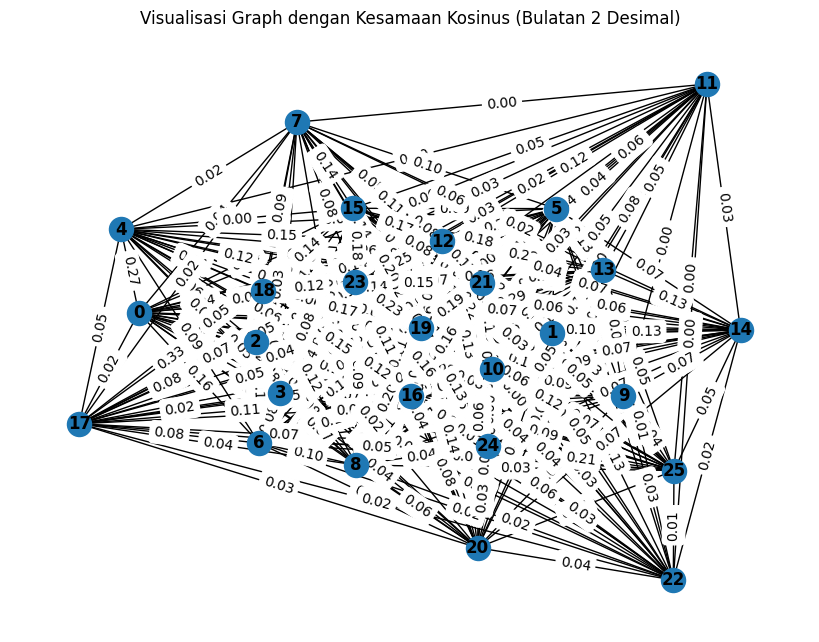
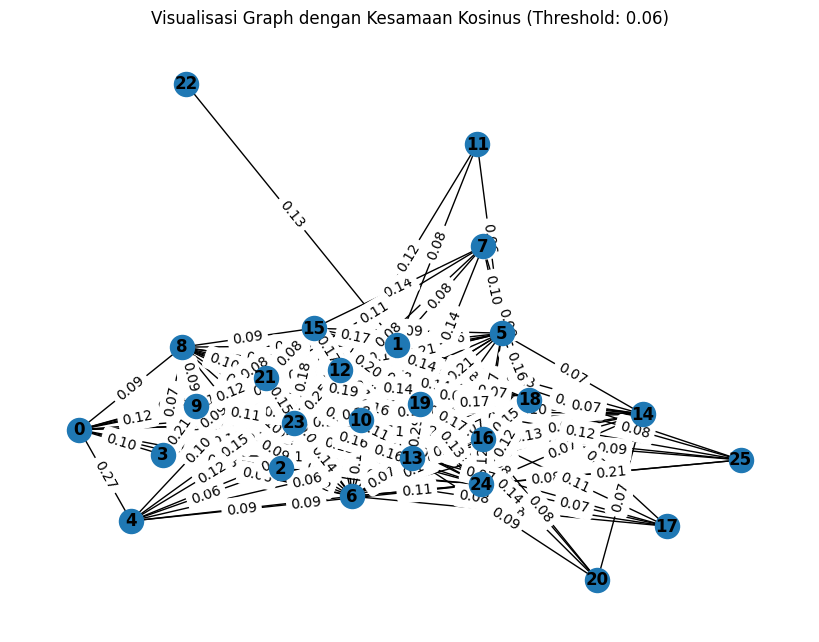

Crawling Satu Berita#
#melakukan web scraping pada halaman berita yang berasal dari URL
import requests
from bs4 import BeautifulSoup
import nltk
# Unduh konten halaman web berita
url = "https://www.bbc.com/indonesia/articles/cxrvr59632eo"
response = requests.get(url)
html = response.text
# Parsing halaman web menggunakan BeautifulSoup
soup = BeautifulSoup(html, 'html.parser')
# Ekstraksi teks dari elemen-elemen yang berisi berita
article = soup.find('div', class_="bbc-1cvxiy9") # Sesuaikan dengan struktur HTML halaman web berita
# Periksa apakah elemen article ada sebelum mencoba mengambil teksnya
if article is not None:
article_text = article.get_text()
# Tokenisasi teks menjadi kalimat menggunakan nltk
nltk.download('punkt') # Pastikan Anda sudah mengunduh tokenisasi kalimat nltk
sentences = nltk.sent_tokenize(article_text)
# Cetak kalimat-kalimat
for sentence in sentences:
print(sentence)
else:
print("Elemen berita tidak ditemukan")
Apa tujuan akhir invasi darat Israel ke Gaza?
Sumber gambar, ReutersKeterangan gambar, Militer Israel telah memanggil sejumlah tentara cadangan untuk bertempur melawan Hamas.1 November 2023Paul KirbyBBC NewsPara pemimpin Israel telah menegaskan bahwa kelompok milisi Palestina, Hamas, akan dimusnahkan dari muka bumi dan Gaza tidak akan pernah kembali seperti semula.“Setiap anggota Hamas adalah orang mati,” kata Perdana Menteri Benjamin Netanyahu setelah kelompok milisi tersebut membunuh lebih dari 1.300 orang dalam serangan yang tak terduga ke Israel pada 7 Oktober.Tujuan Operasi Pedang Besi – operasi serangan balasan Israel atas serangan Hamas – nampaknya jauh lebih ambisius dibandingkan apa pun yang direncanakan militer Israel di Gaza sebelumnya.
Lewatkan Artikel-artikel yang direkomendasikan dan terus membacaArtikel-artikel yang direkomendasikanPalestina: Tentara Israel ‘serbu’ RS Al-Shifa di Gaza dengan tankSejarah Deklarasi Balfour: 67 kata yang membentuk Negara Israel dan mengubah sejarah Bangsa PalestinaSiapa Abu Ubaida, apa kaitannya dengan Hamas?Pasukan Israel sudah berada ‘di jantung Kota Gaza‘, apakah Gaza akan segera jatuh ke tangan Israel?
Akhir dari Artikel-artikel yang direkomendasikanAkan tetapi, apakah itu operasi militer yang realistis, dan bagaimana para komandan militer Israel merealisasikan ambisi ini?
Invasi darat ke Jalur Gaza melibatkan pertempuran dari rumah ke rumah di perkotaan, membawa risiko besar bagi penduduk sipil.
Serangan udara Israel yang dilakukan tak lama setelah serangan Hamas, telah merenggut ribuan nyawa warga Gaza dan lebih dari 400.000 orang terpaksa mengungsi.
Selain invasi darat, militer Israel memiliki misi tambahan menyelamatkan sedikitnya 150 sandera, yang ditahan di lokasi yang tidak diketahui di seluruh Gaza.Herzi Halevi, kepala staf Pasukan Pertahanan Israel (IDF), berjanji untuk "membongkar" Hamas.
Namun, bagaimana nasib Gaza setelah 16 tahun dikuasai Hamas?
Sumber gambar, Ahmed Zakot/SOPA Images/LightRocketKeterangan gambar, Yahya Sinwar, pemimpin Hamas di Gaza diidentifikasi sebagai sasaran utama oleh Israel“Saya kira Israel tidak bisa membubarkan setiap anggota Hamas, karena ini adalah gagasan Islam ekstremis,” kata analis militer Amir Bar Shalom dari Radio Angkatan Darat Israel.
“Tetapi [Israel] dapat melemahkannya sebanyak yang [Israel] bisa sehingga Hamas tidak mempunyai kemampuan operasional.”Itu mungkin merupakan tujuan yang lebih realistis.
Sejauh ini, Israel telah berperang empat kali dengan Hamas, dan setiap upaya untuk menghentikan serangan roketnya selalu gagal.Juru bicara IDF, Letkol Jonathan Conricus, mengatakan bahwa pada akhir perang ini, Hamas seharusnya tidak lagi memiliki kapasitas militer untuk "mengancam atau membunuh warga sipil Israel".Invasi darat penuh dengan risikoOperasi militer bergantung pada beberapa faktor yang dapat menggagalkannya.Organisasi sayap Hamas, Brigade Izzedine al-Qassam, telah bersiap menghadapi serangan Israel.
Alat peledak telah dipasang, dan penyergapan direncanakan.
Mereka dapat menggunakan jaringan terowongan Hamas yang terkenal dan luas untuk menyerang pasukan Israel.Baca juga:Israel segera melancarkan serangan darat ke Gaza, bagaimana pertempuran bakal berlangsung?Perang Israel-Hamas: Netanyahu tolak gencatan senjata: 'Ini waktunya berperang'Pada 2014, batalion infanteri Israel menderita kerugian besar akibat ranjau anti-tank, penembak jitu dan penyergapan, sementara ratusan warga sipil tewas dalam pertempuran di lingkungan utara Kota Gaza.Itulah salah satu alasan Israel menuntut evakuasi 1,1 juta warga Palestina dari bagian utara Jalur Gaza.Warga Israel telah diperingatkan bahwa perang bisa memakan waktu berbulan-bulan, dan tercatat 360.000 tentara cadangan telah melapor untuk bertugas.Pertanyaannya adalah berapa lama Israel dapat menjalankan operasinya tanpa adanya tekanan internasional untuk mundur?Lembaga yang menangani pengungsi di bawah PBB telah memperingatkan bahwa Gaza dengan cepat menjadi “lubang neraka”.Jumlah korban tewas meningkat dengan cepat; Pasokan air, listrik, dan bahan bakar telah diputus, dan kini separuh penduduk diminta mengungsi dari wilayah lain.“Pemerintah dan militer merasa mendapat dukungan dari komunitas internasional – setidaknya dari para pemimpin Barat.
Filosofinya adalah 'mari kita bergerak, kita punya banyak waktu',” kata Yossi Melman, salah satu jurnalis keamanan dan intelijen terkemuka Israel.Namun cepat atau lambat dia yakin sekutu Israel akan turun tangan jika mereka melihat gambaran orang-orang kelaparan.Penyelamatan para sanderaLewati Podcast dan lanjutkan membacaInvestigasi: Skandal AdopsiInvestigasi untuk menyibak tabir adopsi ilegal dari Indonesia ke Belanda di masa laluEpisodeAkhir dari PodcastBanyak dari para sandera adalah warga Israel, namun terdapat juga sejumlah besar warga negara asing dan mereka yang memiliki kewarganegaraan ganda, sehingga beberapa negara lain, termasuk Amerika Serikat, Prancis, dan Inggris, memiliki kepentingan dalam operasi ini dan pembebasan warga negara mereka secara aman.
Presiden Prancis, Emmanuel Macron, telah berjanji kepada keluarga Prancis-Israel yang kerabatnya disandera Hamas untuk membawa pulang orang yang mereka cintai: "Prancis tidak akan pernah meninggalkan anak-anaknya.
"Sejauh mana nasib para sandera akan mempengaruhi perencana militer masih belum jelas, dan terdapat juga tekanan dalam negeri terhadap para pemimpin Israel.Lebih jauh tentang konflik Israel dan Hamas: Perkembangan terbaru konflik Israel-PalestinaSiapa Hamas dan bagaimana kiprahnya?
Sejarah konflik berkepanjangan Israel-PalestinaSejarah Jalur Gaza, ‘penjara terbuka paling besar di dunia’Amir Bar Shalom membandingkan situasi ini dengan insiden yang terjadi pada saat Olimpiade Munich tahun 1972, ketika sekelompok orang bersenjata Palestina menangkap atlet Israel dan membunuh 11 orang.Sebuah operasi diluncurkan untuk mencari dan membunuh semua orang yang terlibat dalam serangan tersebut dan dia yakin pemerintah ingin memburu semua orang di balik penculikan tersebut.Menyelamatkan begitu banyak orang yang ditahan di berbagai wilayah di Gaza mungkin tidak dapat dilakukan oleh pasukan komando unit elit Israel, Sayeret Matkal.
Untuk memutar video ini, aktifkan JavaScript atau coba di mesin pencari lainPlay video, "Kehidupan di Gaza : Mengapa konflik terus terjadi di sana?
", Durasi 7,1307:13Keterangan video, Kehidupan di Gaza : Mengapa konflik terus terjadi di sana?Hamas telah mengancam akan menembak sandera sebagai pencegah serangan Israel.Pada 2011, Israel menukar lebih dari 1.000 tahanan untuk pembebasan seorang tentara, Gilad Shalit, yang ditahan oleh Hamas selama lima tahun.
Namun Israel akan berpikir dua kali sebelum melepaskan tahanan secara besar-besaran, karena salah satu tahanan yang dibebaskan dalam pertukaran itu adalah Yahya Sinwar, yang kemudian menjadi pemimpin politik Hamas di Gaza.Negara tetangga mengawasi dengan cermatHal yang juga dapat mempengaruhi durasi dan hasil serangan darat adalah bagaimana reaksi negara-negara tetangga Israel.Mereka mungkin menghadapi peningkatan tuntutan dari Mesir, yang berbatasan dengan Gaza dan sudah mendorong agar bantuan diizinkan melalui perbatasan Rafah.“Semakin besar penderitaan yang dialami warga Gaza setelah operasi militer Israel, semakin besar pula tekanan yang akan dihadapi Mesir, agar terlihat seolah-olah mereka tidak berpaling dari Palestina,” kata Ofir Winter dari Institut Kajian Keamanan Nasional Israel.Namun hal itu tidak akan terjadi jika Kairo mengizinkan penyeberangan massal warga Gaza ke Mesir atau bertindak secara militer melawan Israel atas nama mereka, dia yakin.Sumber gambar, SAID KHATIB/AFPKeterangan gambar, Serangan udara dan artileri Israel telah membombardir Gaza setelah Hamas melakukan serangan terhadap warga Israel Perbatasan utara Israel dengan Lebanon juga berada dalam pengawasan ketat.Sejauh ini telah terjadi beberapa serangan lintas batas yang melibatkan kelompok militan Islam Hizbullah, namun serangan tersebut belum menjadi sebuah front baru terhadap Israel.Iran, sponsor utama Hizbullah, sudah mengancam akan meluncurkan “front baru” melawan Israel.
Hal-hal tersebut menjadi fokus peringatan Presiden AS Joe Biden baru-baru ini, ketika dia berkata: "Kepada negara mana pun, organisasi mana pun, siapa pun yang berpikir untuk mengambil keuntungan dari situasi ini, saya punya satu kata: Jangan!
"Sebuah kapal induk AS telah dikirim ke Mediterania Timur untuk menekankan pesan tersebut.Apa tujuan akhir Israel terhadap Gaza?Jika Hamas melemah secara signifikan, pertanyaannya adalah apa yang bisa dilakukan untuk menggantikannya?Israel menarik tentaranya dan ribuan pemukim keluar dari Jalur Gaza pada tahun 2005 dan tidak memiliki niat untuk kembali menduduki Kawasan itu.Ofir Winter yakin peralihan kekuasaan berpotensi membuka jalan bagi kembalinya Otoritas Palestina (PA) secara bertahap, yang diusir dari Gaza oleh Hamas pada tahun 2007.
PA, yang bukan kelompok milisi, saat ini menguasai sebagian Tepi Barat.
Baca juga:Apa hasil analisis terbaru dari bukti-bukti di lokasi ledakan rumah sakit di Gaza?Perang Israel-Hamas: Netanyahu tolak gencatan senjata: 'Ini waktunya berperang'Kesaksian warga Thailand yang terperangkap perang Israel-Hamas: 'Kami melompati tembok dan ditembaki dari belakang'Mesir juga akan menyambut negara tetangganya yang lebih pragmatis, ujarnya.Infrastruktur Gaza yang hancur pada akhirnya harus dibangun kembali seperti setelah perang sebelumnya.Bahkan sebelum kekejaman Hamas di Israel, terdapat pembatasan ketat terhadap “barang-barang penggunaan ganda” yang memasuki Gaza yang dapat memiliki peran militer dan juga sipil.
Israel ingin menerapkan pembatasan yang lebih ketat.Ada seruan untuk membangun zona penyangga yang luas di sepanjang pagar Gaza untuk memberikan perlindungan yang lebih besar bagi komunitas Israel.
Mantan kepala dinas keamanan Shin Bet, Yoram Cohen, yakin zona "tembak di tempat" sepanjang 2 km akan diperlukan untuk menggantikan zona yang ada.Apapun hasil perangnya, Israel ingin memastikan serangan serupa tidak akan terjadi lagi.Topik terkaitMesirIsrael-PalestinaPolitikMiliterTimur tengahDunia ArabIsrael Palestina
[nltk_data] Downloading package punkt to /root/nltk_data...
[nltk_data] Package punkt is already up-to-date!
#menghitung dan mencetak nilai TF-IDF (Term Frequency-Inverse Document Frequency)
#untuk setiap kata dalam setiap kalimat dari teks yang telah di-tokenisasi sebelumnya.
from sklearn.feature_extraction.text import TfidfVectorizer
# Inisialisasi penghitung TF-IDF
tfidf_vectorizer = TfidfVectorizer()
# Hitung TF-IDF
tfidf_matrix = tfidf_vectorizer.fit_transform(sentences)
# Daftar kata kunci
feature_names = tfidf_vectorizer.get_feature_names_out()
# Konversi matriks TF-IDF menjadi bentuk yang lebih mudah dibaca
tfidf_values = tfidf_matrix.toarray()
# Cetak TF-IDF untuk setiap kata dalam setiap kalimat
for i, sentence in enumerate(sentences):
print(f"Kalimat {i + 1}: {sentence}")
for j, word in enumerate(feature_names):
tfidf_value = tfidf_values[i][j]
if tfidf_value > 0:
print(f"{word}: {tfidf_value:.4f}")
print()
Kalimat 1: Apa tujuan akhir invasi darat Israel ke Gaza?
akhir: 0.4198
apa: 0.3913
darat: 0.3464
gaza: 0.2286
invasi: 0.4198
israel: 0.1956
ke: 0.3280
tujuan: 0.4198
Kalimat 2: Sumber gambar, ReutersKeterangan gambar, Militer Israel telah memanggil sejumlah tentara cadangan untuk bertempur melawan Hamas.1 November 2023Paul KirbyBBC NewsPara pemimpin Israel telah menegaskan bahwa kelompok milisi Palestina, Hamas, akan dimusnahkan dari muka bumi dan Gaza tidak akan pernah kembali seperti semula.“Setiap anggota Hamas adalah orang mati,” kata Perdana Menteri Benjamin Netanyahu setelah kelompok milisi tersebut membunuh lebih dari 1.300 orang dalam serangan yang tak terduga ke Israel pada 7 Oktober.Tujuan Operasi Pedang Besi – operasi serangan balasan Israel atas serangan Hamas – nampaknya jauh lebih ambisius dibandingkan apa pun yang direncanakan militer Israel di Gaza sebelumnya.
2023paul: 0.1169
300: 0.1169
adalah: 0.0763
akan: 0.1294
ambisius: 0.1169
anggota: 0.1037
apa: 0.0813
atas: 0.1037
bahwa: 0.0944
balasan: 0.1169
benjamin: 0.1169
bertempur: 0.1169
besi: 0.1169
bumi: 0.1169
cadangan: 0.1037
dalam: 0.0763
dan: 0.0538
dari: 0.1123
di: 0.0515
dibandingkan: 0.1169
dimusnahkan: 0.1169
direncanakan: 0.1037
gambar: 0.1888
gaza: 0.0949
hamas: 0.1977
israel: 0.2030
jauh: 0.1037
kata: 0.0763
ke: 0.0681
kelompok: 0.1888
kembali: 0.0944
kirbybbc: 0.1169
lebih: 0.1438
mati: 0.1169
melawan: 0.1037
memanggil: 0.1169
membunuh: 0.0944
menegaskan: 0.1169
menteri: 0.1169
milisi: 0.2075
militer: 0.1294
muka: 0.1169
nampaknya: 0.1169
netanyahu: 0.0944
newspara: 0.1169
november: 0.1169
oktober: 0.1169
operasi: 0.1625
orang: 0.1625
pada: 0.0719
palestina: 0.0763
pedang: 0.1169
pemimpin: 0.0813
perdana: 0.1169
pernah: 0.1037
pun: 0.1037
reutersketerangan: 0.1169
sebelumnya: 0.1037
sejumlah: 0.1037
semula: 0.1169
seperti: 0.1037
serangan: 0.2043
setelah: 0.0813
setiap: 0.0944
sumber: 0.0944
tak: 0.1037
telah: 0.1294
tentara: 0.0872
terduga: 0.1169
tersebut: 0.0813
tidak: 0.0616
tujuan: 0.0872
untuk: 0.0538
yang: 0.0844
Kalimat 3: Lewatkan Artikel-artikel yang direkomendasikan dan terus membacaArtikel-artikel yang direkomendasikanPalestina: Tentara Israel ‘serbu’ RS Al-Shifa di Gaza dengan tankSejarah Deklarasi Balfour: 67 kata yang membentuk Negara Israel dan mengubah sejarah Bangsa PalestinaSiapa Abu Ubaida, apa kaitannya dengan Hamas?Pasukan Israel sudah berada ‘di jantung Kota Gaza‘, apakah Gaza akan segera jatuh ke tangan Israel?
67: 0.1486
abu: 0.1486
akan: 0.0822
al: 0.1319
apa: 0.1033
apakah: 0.1319
artikel: 0.3956
balfour: 0.1486
bangsa: 0.1486
berada: 0.1319
dan: 0.1367
deklarasi: 0.1486
dengan: 0.2065
di: 0.1310
direkomendasikan: 0.1486
direkomendasikanpalestina: 0.1486
gaza: 0.1810
hamas: 0.0628
israel: 0.2064
jantung: 0.1486
jatuh: 0.1486
kaitannya: 0.1486
kata: 0.0969
ke: 0.0866
kota: 0.1319
lewatkan: 0.1486
membacaartikel: 0.1486
membentuk: 0.1486
mengubah: 0.1486
negara: 0.1033
palestinasiapa: 0.1319
pasukan: 0.1108
rs: 0.1486
segera: 0.1319
sejarah: 0.1319
serbu: 0.1486
shifa: 0.1486
sudah: 0.1319
tangan: 0.1319
tanksejarah: 0.1486
tentara: 0.1108
terus: 0.1200
ubaida: 0.1486
yang: 0.1609
Kalimat 4: Akhir dari Artikel-artikel yang direkomendasikanAkan tetapi, apakah itu operasi militer yang realistis, dan bagaimana para komandan militer Israel merealisasikan ambisi ini?
akhir: 0.1944
ambisi: 0.2607
apakah: 0.2314
artikel: 0.4628
bagaimana: 0.1812
dan: 0.1199
dari: 0.1253
direkomendasikanakan: 0.2607
ini: 0.1311
israel: 0.0906
itu: 0.1944
komandan: 0.2607
merealisasikan: 0.2607
militer: 0.2885
operasi: 0.1812
para: 0.1944
realistis: 0.2314
tetapi: 0.2314
yang: 0.1882
Kalimat 5: Invasi darat ke Jalur Gaza melibatkan pertempuran dari rumah ke rumah di perkotaan, membawa risiko besar bagi penduduk sipil.
bagi: 0.2209
besar: 0.1784
darat: 0.1682
dari: 0.1314
di: 0.1205
gaza: 0.1110
invasi: 0.2039
jalur: 0.2039
ke: 0.3186
melibatkan: 0.2427
membawa: 0.2427
penduduk: 0.2427
perkotaan: 0.2735
pertempuran: 0.2427
risiko: 0.2735
rumah: 0.4854
sipil: 0.2039
Kalimat 6: Serangan udara Israel yang dilakukan tak lama setelah serangan Hamas, telah merenggut ribuan nyawa warga Gaza dan lebih dari 400.000 orang terpaksa mengungsi.
000: 0.2181
400: 0.2700
dan: 0.1242
dari: 0.1297
dilakukan: 0.2181
gaza: 0.1096
hamas: 0.1142
israel: 0.0938
lama: 0.2397
lebih: 0.1661
mengungsi: 0.2397
merenggut: 0.2700
nyawa: 0.2700
orang: 0.1877
ribuan: 0.2397
serangan: 0.3146
setelah: 0.1877
tak: 0.2397
telah: 0.1494
terpaksa: 0.2700
udara: 0.2397
warga: 0.1761
yang: 0.0975
Kalimat 7: Selain invasi darat, militer Israel memiliki misi tambahan menyelamatkan sedikitnya 150 sandera, yang ditahan di lokasi yang tidak diketahui di seluruh Gaza.Herzi Halevi, kepala staf Pasukan Pertahanan Israel (IDF), berjanji untuk "membongkar" Hamas.
150: 0.2130
berjanji: 0.1890
darat: 0.1310
di: 0.1878
diketahui: 0.2130
ditahan: 0.1720
gaza: 0.0865
halevi: 0.2130
hamas: 0.0901
herzi: 0.2130
idf: 0.1890
invasi: 0.1588
israel: 0.1480
kepala: 0.1890
lokasi: 0.1890
membongkar: 0.2130
memiliki: 0.1481
menyelamatkan: 0.1890
militer: 0.1179
misi: 0.2130
pasukan: 0.1588
pertahanan: 0.2130
sandera: 0.1588
sedikitnya: 0.2130
selain: 0.2130
seluruh: 0.2130
staf: 0.2130
tambahan: 0.2130
tidak: 0.1122
untuk: 0.0980
yang: 0.1537
Kalimat 8: Namun, bagaimana nasib Gaza setelah 16 tahun dikuasai Hamas?
16: 0.4341
bagaimana: 0.3018
dikuasai: 0.4341
gaza: 0.1763
hamas: 0.1836
namun: 0.3506
nasib: 0.3853
setelah: 0.3018
tahun: 0.3237
Kalimat 9: Sumber gambar, Ahmed Zakot/SOPA Images/LightRocketKeterangan gambar, Yahya Sinwar, pemimpin Hamas di Gaza diidentifikasi sebagai sasaran utama oleh Israel“Saya kira Israel tidak bisa membubarkan setiap anggota Hamas, karena ini adalah gagasan Islam ekstremis,” kata analis militer Amir Bar Shalom dari Radio Angkatan Darat Israel.
adalah: 0.1142
ahmed: 0.1751
amir: 0.1554
analis: 0.1751
anggota: 0.1554
angkatan: 0.1751
bar: 0.1554
bisa: 0.1305
darat: 0.1077
dari: 0.0841
di: 0.0772
diidentifikasi: 0.1751
ekstremis: 0.1751
gagasan: 0.1751
gambar: 0.2828
gaza: 0.0711
hamas: 0.1480
images: 0.1751
ini: 0.0880
islam: 0.1554
israel: 0.1824
karena: 0.1554
kata: 0.1142
kira: 0.1751
lightrocketketerangan: 0.1751
membubarkan: 0.1751
militer: 0.0969
oleh: 0.1305
pemimpin: 0.1217
radio: 0.1751
sasaran: 0.1751
saya: 0.1554
sebagai: 0.1554
setiap: 0.1414
shalom: 0.1554
sinwar: 0.1554
sopa: 0.1751
sumber: 0.1414
tidak: 0.0922
utama: 0.1554
yahya: 0.1554
zakot: 0.1751
Kalimat 10: “Tetapi [Israel] dapat melemahkannya sebanyak yang [Israel] bisa sehingga Hamas tidak mempunyai kemampuan operasional.”Itu mungkin merupakan tujuan yang lebih realistis.
bisa: 0.2072
dapat: 0.1813
hamas: 0.1175
israel: 0.1931
itu: 0.2072
kemampuan: 0.2779
lebih: 0.1710
melemahkannya: 0.2779
mempunyai: 0.2779
merupakan: 0.2779
mungkin: 0.2244
operasional: 0.2779
realistis: 0.2466
sebanyak: 0.2779
sehingga: 0.2466
tetapi: 0.2466
tidak: 0.1464
tujuan: 0.2072
yang: 0.2006
Kalimat 11: Sejauh ini, Israel telah berperang empat kali dengan Hamas, dan setiap upaya untuk menghentikan serangan roketnya selalu gagal.Juru bicara IDF, Letkol Jonathan Conricus, mengatakan bahwa pada akhir perang ini, Hamas seharusnya tidak lagi memiliki kapasitas militer untuk "mengancam atau membunuh warga sipil Israel".Invasi darat penuh dengan risikoOperasi militer bergantung pada beberapa faktor yang dapat menggagalkannya.Organisasi sayap Hamas, Brigade Izzedine al-Qassam, telah bersiap menghadapi serangan Israel.
akhir: 0.1051
al: 0.1251
atau: 0.1051
bahwa: 0.1139
beberapa: 0.1139
bergantung: 0.1410
berperang: 0.1139
bersiap: 0.1410
bicara: 0.1410
brigade: 0.1410
conricus: 0.1410
dan: 0.0648
dapat: 0.0920
darat: 0.0867
dengan: 0.1960
empat: 0.1410
faktor: 0.1410
gagal: 0.1410
hamas: 0.1788
idf: 0.1251
ini: 0.1417
invasi: 0.1051
israel: 0.1469
izzedine: 0.1410
jonathan: 0.1410
juru: 0.1410
kali: 0.1251
kapasitas: 0.1410
lagi: 0.1251
letkol: 0.1410
membunuh: 0.1139
memiliki: 0.0980
mengancam: 0.1139
mengatakan: 0.1410
menggagalkannya: 0.1410
menghadapi: 0.1251
menghentikan: 0.1410
militer: 0.1560
organisasi: 0.1251
pada: 0.1735
penuh: 0.1410
perang: 0.1139
qassam: 0.1410
risikooperasi: 0.1410
roketnya: 0.1410
sayap: 0.1410
seharusnya: 0.1410
sejauh: 0.1139
selalu: 0.1410
serangan: 0.1643
setiap: 0.1139
sipil: 0.1051
telah: 0.1560
tidak: 0.0743
untuk: 0.1297
upaya: 0.1410
warga: 0.0920
yang: 0.0509
Kalimat 12: Alat peledak telah dipasang, dan penyergapan direncanakan.
alat: 0.4431
dan: 0.2038
dipasang: 0.4431
direncanakan: 0.3933
peledak: 0.4431
penyergapan: 0.3933
telah: 0.2452
Kalimat 13: Mereka dapat menggunakan jaringan terowongan Hamas yang terkenal dan luas untuk menyerang pasukan Israel.Baca juga:Israel segera melancarkan serangan darat ke Gaza, bagaimana pertempuran bakal berlangsung?Perang Israel-Hamas: Netanyahu tolak gencatan senjata: 'Ini waktunya berperang'Pada 2014, batalion infanteri Israel menderita kerugian besar akibat ranjau anti-tank, penembak jitu dan penyergapan, sementara ratusan warga sipil tewas dalam pertempuran di lingkungan utara Kota Gaza.Itulah salah satu alasan Israel menuntut evakuasi 1,1 juta warga Palestina dari bagian utara Jalur Gaza.Warga Israel telah diperingatkan bahwa perang bisa memakan waktu berbulan-bulan, dan tercatat 360.000 tentara cadangan telah melapor untuk bertugas.Pertanyaannya adalah berapa lama Israel dapat menjalankan operasinya tanpa adanya tekanan internasional untuk mundur?Lembaga yang menangani pengungsi di bawah PBB telah memperingatkan bahwa Gaza dengan cepat menjadi “lubang neraka”.Jumlah korban tewas meningkat dengan cepat; Pasokan air, listrik, dan bahan bakar telah diputus, dan kini separuh penduduk diminta mengungsi dari wilayah lain.“Pemerintah dan militer merasa mendapat dukungan dari komunitas internasional – setidaknya dari para pemimpin Barat.
000: 0.0651
2014: 0.0806
360: 0.0806
adalah: 0.0526
adanya: 0.0806
air: 0.0806
akibat: 0.0806
alasan: 0.0806
anti: 0.0806
baca: 0.0715
bagaimana: 0.0560
bagian: 0.0806
bahan: 0.0806
bahwa: 0.1301
bakal: 0.0806
bakar: 0.0806
barat: 0.0715
batalion: 0.0806
bawah: 0.0806
berapa: 0.0806
berbulan: 0.0806
berlangsung: 0.0806
berperang: 0.0651
bertugas: 0.0806
besar: 0.0526
bisa: 0.0601
bulan: 0.0806
cadangan: 0.0715
cepat: 0.1430
dalam: 0.0526
dan: 0.2223
dapat: 0.1051
darat: 0.0496
dari: 0.1548
dengan: 0.1120
di: 0.0710
diminta: 0.0806
diperingatkan: 0.0806
diputus: 0.0806
dukungan: 0.0806
evakuasi: 0.0806
gaza: 0.1308
gencatan: 0.0715
hamas: 0.0681
infanteri: 0.0806
ini: 0.0405
internasional: 0.1611
israel: 0.1959
itulah: 0.0806
jalur: 0.0601
jaringan: 0.0806
jitu: 0.0806
juga: 0.0560
jumlah: 0.0806
juta: 0.0806
ke: 0.0469
kerugian: 0.0806
kini: 0.0806
komunitas: 0.0715
korban: 0.0806
kota: 0.0715
lain: 0.0715
lama: 0.0715
lembaga: 0.0806
lingkungan: 0.0806
listrik: 0.0806
luas: 0.0715
lubang: 0.0806
melancarkan: 0.0806
melapor: 0.0806
memakan: 0.0806
memperingatkan: 0.0806
menangani: 0.0806
mendapat: 0.0806
menderita: 0.0806
menggunakan: 0.0806
mengungsi: 0.0715
meningkat: 0.0806
menjadi: 0.0651
menjalankan: 0.0806
menuntut: 0.0806
menyerang: 0.0806
merasa: 0.0806
mereka: 0.0601
militer: 0.0446
mundur: 0.0806
neraka: 0.0806
netanyahu: 0.0651
operasinya: 0.0806
pada: 0.0496
palestina: 0.0526
para: 0.0601
pasokan: 0.0806
pasukan: 0.0601
pbb: 0.0806
pemerintah: 0.0715
pemimpin: 0.0560
penduduk: 0.0715
penembak: 0.0806
pengungsi: 0.0806
penyergapan: 0.0715
perang: 0.1301
pertanyaannya: 0.0715
pertempuran: 0.1430
ranjau: 0.0806
ratusan: 0.0806
salah: 0.0651
satu: 0.0601
segera: 0.0715
sementara: 0.0806
senjata: 0.0715
separuh: 0.0806
serangan: 0.0469
setidaknya: 0.0806
sipil: 0.0601
tank: 0.0806
tanpa: 0.0806
tekanan: 0.0651
telah: 0.1783
tentara: 0.0601
tercatat: 0.0806
terkenal: 0.0806
terowongan: 0.0806
tewas: 0.1611
tolak: 0.0715
untuk: 0.1112
utara: 0.1430
waktu: 0.0715
waktunya: 0.0715
warga: 0.1577
wilayah: 0.0715
yang: 0.0581
Kalimat 14: Filosofinya adalah 'mari kita bergerak, kita punya banyak waktu',” kata Yossi Melman, salah satu jurnalis keamanan dan intelijen terkemuka Israel.Namun cepat atau lambat dia yakin sekutu Israel akan turun tangan jika mereka melihat gambaran orang-orang kelaparan.Penyelamatan para sanderaLewati Podcast dan lanjutkan membacaInvestigasi: Skandal AdopsiInvestigasi untuk menyibak tabir adopsi ilegal dari Indonesia ke Belanda di masa laluEpisodeAkhir dari PodcastBanyak dari para sandera adalah warga Israel, namun terdapat juga sejumlah besar warga negara asing dan mereka yang memiliki kewarganegaraan ganda, sehingga beberapa negara lain, termasuk Amerika Serikat, Prancis, dan Inggris, memiliki kepentingan dalam operasi ini dan pembebasan warga negara mereka secara aman.
adalah: 0.1353
adopsi: 0.1037
adopsiinvestigasi: 0.1037
akan: 0.0574
aman: 0.1037
amerika: 0.1037
asing: 0.1037
atau: 0.0773
banyak: 0.0920
beberapa: 0.0837
belanda: 0.1037
bergerak: 0.1037
besar: 0.0676
cepat: 0.0920
dalam: 0.0676
dan: 0.2384
dari: 0.1495
di: 0.0457
dia: 0.0773
filosofinya: 0.1037
gambaran: 0.1037
ganda: 0.0920
ilegal: 0.1037
indonesia: 0.1037
inggris: 0.1037
ini: 0.0521
intelijen: 0.1037
israel: 0.1081
jika: 0.0837
juga: 0.0721
jurnalis: 0.1037
kata: 0.0676
ke: 0.0604
keamanan: 0.0837
kelaparan: 0.1037
kepentingan: 0.1037
kewarganegaraan: 0.1037
kita: 0.2074
lain: 0.0920
laluepisodeakhir: 0.1037
lambat: 0.1037
lanjutkan: 0.1037
mari: 0.1037
masa: 0.1037
melihat: 0.1037
melman: 0.1037
membacainvestigasi: 0.1037
memiliki: 0.1442
menyibak: 0.1037
mereka: 0.2320
namun: 0.1675
negara: 0.2162
operasi: 0.0721
orang: 0.1442
para: 0.1547
pembebasan: 0.0920
penyelamatan: 0.1037
podcast: 0.1037
podcastbanyak: 0.1037
prancis: 0.0920
punya: 0.0920
salah: 0.0837
sandera: 0.0773
sanderalewati: 0.1037
satu: 0.0773
secara: 0.0837
sehingga: 0.0920
sejumlah: 0.0920
sekutu: 0.1037
serikat: 0.1037
skandal: 0.1037
tabir: 0.1037
tangan: 0.0920
terdapat: 0.0837
terkemuka: 0.1037
termasuk: 0.1037
turun: 0.1037
untuk: 0.0477
waktu: 0.0920
warga: 0.2029
yakin: 0.0721
yang: 0.0374
yossi: 0.1037
Kalimat 15: Presiden Prancis, Emmanuel Macron, telah berjanji kepada keluarga Prancis-Israel yang kerabatnya disandera Hamas untuk membawa pulang orang yang mereka cintai: "Prancis tidak akan pernah meninggalkan anak-anaknya.
akan: 0.1130
anak: 0.2042
anaknya: 0.2042
berjanji: 0.1812
cintai: 0.2042
disandera: 0.2042
emmanuel: 0.2042
hamas: 0.0863
israel: 0.0709
keluarga: 0.2042
kepada: 0.1812
kerabatnya: 0.2042
macron: 0.2042
membawa: 0.1812
meninggalkan: 0.2042
mereka: 0.1523
orang: 0.1419
pernah: 0.1812
prancis: 0.5436
presiden: 0.1812
pulang: 0.2042
telah: 0.1130
tidak: 0.1076
untuk: 0.0939
yang: 0.1474
Kalimat 16: "Sejauh mana nasib para sandera akan mempengaruhi perencana militer masih belum jelas, dan terdapat juga tekanan dalam negeri terhadap para pemimpin Israel.Lebih jauh tentang konflik Israel dan Hamas: Perkembangan terbaru konflik Israel-PalestinaSiapa Hamas dan bagaimana kiprahnya?
akan: 0.1073
bagaimana: 0.1348
belum: 0.1721
dalam: 0.1265
dan: 0.2675
hamas: 0.1640
israel: 0.2020
jauh: 0.1721
jelas: 0.1939
juga: 0.1348
kiprahnya: 0.1939
konflik: 0.2892
lebih: 0.1193
mana: 0.1721
masih: 0.1939
mempengaruhi: 0.1721
militer: 0.1073
nasib: 0.1721
negeri: 0.1939
palestinasiapa: 0.1721
para: 0.2892
pemimpin: 0.1348
perencana: 0.1939
perkembangan: 0.1939
sandera: 0.1446
sejauh: 0.1566
tekanan: 0.1566
tentang: 0.1939
terbaru: 0.1721
terdapat: 0.1566
terhadap: 0.1446
Kalimat 17: Sejarah konflik berkepanjangan Israel-PalestinaSejarah Jalur Gaza, ‘penjara terbuka paling besar di dunia’Amir Bar Shalom membandingkan situasi ini dengan insiden yang terjadi pada saat Olimpiade Munich tahun 1972, ketika sekelompok orang bersenjata Palestina menangkap atlet Israel dan membunuh 11 orang.Sebuah operasi diluncurkan untuk mencari dan membunuh semua orang yang terlibat dalam serangan tersebut dan dia yakin pemerintah ingin memburu semua orang di balik penculikan tersebut.Menyelamatkan begitu banyak orang yang ditahan di berbagai wilayah di Gaza mungkin tidak dapat dilakukan oleh pasukan komando unit elit Israel, Sayeret Matkal.
11: 0.1133
1972: 0.1133
amir: 0.1005
atlet: 0.1133
balik: 0.1133
banyak: 0.1005
bar: 0.1005
begitu: 0.1133
berbagai: 0.1133
berkepanjangan: 0.1133
bersenjata: 0.1133
besar: 0.0739
dalam: 0.0739
dan: 0.1563
dapat: 0.0739
dengan: 0.0787
di: 0.1997
dia: 0.0845
dilakukan: 0.0915
diluncurkan: 0.1133
ditahan: 0.0915
dunia: 0.1133
elit: 0.1133
gaza: 0.0920
ingin: 0.0915
ini: 0.0570
insiden: 0.1133
israel: 0.1181
jalur: 0.0845
ketika: 0.1005
komando: 0.1133
konflik: 0.0845
matkal: 0.1133
membandingkan: 0.1133
membunuh: 0.1830
memburu: 0.1133
menangkap: 0.1133
mencari: 0.1133
menyelamatkan: 0.1005
mungkin: 0.0915
munich: 0.1133
oleh: 0.0845
olimpiade: 0.1133
operasi: 0.0787
orang: 0.3937
pada: 0.0697
palestina: 0.0739
palestinasejarah: 0.1133
paling: 0.1133
pasukan: 0.0845
pemerintah: 0.1005
penculikan: 0.1133
penjara: 0.1133
saat: 0.1005
sayeret: 0.1133
sebuah: 0.0915
sejarah: 0.1005
sekelompok: 0.1133
semua: 0.2266
serangan: 0.0660
shalom: 0.1005
situasi: 0.1005
tahun: 0.0845
terbuka: 0.1133
terjadi: 0.0787
terlibat: 0.1133
tersebut: 0.1575
tidak: 0.0597
unit: 0.1133
untuk: 0.0521
wilayah: 0.1005
yakin: 0.0787
yang: 0.1227
Kalimat 18: Untuk memutar video ini, aktifkan JavaScript atau coba di mesin pencari lainPlay video, "Kehidupan di Gaza : Mengapa konflik terus terjadi di sana?
aktifkan: 0.2416
atau: 0.1801
coba: 0.2416
di: 0.3194
gaza: 0.0981
ini: 0.1214
javascript: 0.2416
kehidupan: 0.2144
konflik: 0.1801
lainplay: 0.2416
memutar: 0.2416
mengapa: 0.2144
mesin: 0.2416
pencari: 0.2416
sana: 0.2144
terjadi: 0.1679
terus: 0.1951
untuk: 0.1111
video: 0.4287
Kalimat 19: ", Durasi 7,1307:13Keterangan video, Kehidupan di Gaza : Mengapa konflik terus terjadi di sana?Hamas telah mengancam akan menembak sandera sebagai pencegah serangan Israel.Pada 2011, Israel menukar lebih dari 1.000 tahanan untuk pembebasan seorang tentara, Gilad Shalit, yang ditahan oleh Hamas selama lima tahun.
000: 0.1537
1307: 0.1904
13keterangan: 0.1904
2011: 0.1904
akan: 0.1053
dari: 0.0915
di: 0.1678
ditahan: 0.1537
durasi: 0.1689
gaza: 0.0773
gilad: 0.1904
hamas: 0.1610
israel: 0.1322
kehidupan: 0.1689
konflik: 0.1420
lebih: 0.1171
lima: 0.1904
menembak: 0.1904
mengancam: 0.1537
mengapa: 0.1689
menukar: 0.1904
oleh: 0.1420
pada: 0.1171
pembebasan: 0.1689
pencegah: 0.1904
sana: 0.1689
sandera: 0.1420
sebagai: 0.1689
selama: 0.1904
seorang: 0.1904
serangan: 0.1109
shalit: 0.1904
tahanan: 0.1689
tahun: 0.1420
telah: 0.1053
tentara: 0.1420
terjadi: 0.1323
terus: 0.1537
untuk: 0.0875
video: 0.1689
yang: 0.0687
Kalimat 20: Namun Israel akan berpikir dua kali sebelum melepaskan tahanan secara besar-besaran, karena salah satu tahanan yang dibebaskan dalam pertukaran itu adalah Yahya Sinwar, yang kemudian menjadi pemimpin politik Hamas di Gaza.Negara tetangga mengawasi dengan cermatHal yang juga dapat mempengaruhi durasi dan hasil serangan darat adalah bagaimana reaksi negara-negara tetangga Israel.Mereka mungkin menghadapi peningkatan tuntutan dari Mesir, yang berbatasan dengan Gaza dan sudah mendorong agar bantuan diizinkan melalui perbatasan Rafah.“Semakin besar penderitaan yang dialami warga Gaza setelah operasi militer Israel, semakin besar pula tekanan yang akan dihadapi Mesir, agar terlihat seolah-olah mereka tidak berpaling dari Palestina,” kata Ofir Winter dari Institut Kajian Keamanan Nasional Israel.Namun hal itu tidak akan terjadi jika Kairo mengizinkan penyeberangan massal warga Gaza ke Mesir atau bertindak secara militer melawan Israel atas nama mereka, dia yakin.Sumber gambar, SAID KHATIB/AFPKeterangan gambar, Serangan udara dan artileri Israel telah membombardir Gaza setelah Hamas melakukan serangan terhadap warga Israel Perbatasan utara Israel dengan Lebanon juga berada dalam pengawasan ketat.Sejauh ini telah terjadi beberapa serangan lintas batas yang melibatkan kelompok militan Islam Hizbullah, namun serangan tersebut belum menjadi sebuah front baru terhadap Israel.Iran, sponsor utama Hizbullah, sudah mengancam akan meluncurkan “front baru” melawan Israel.
adalah: 0.0887
afpketerangan: 0.0680
agar: 0.1360
akan: 0.1505
artileri: 0.0680
atas: 0.0603
atau: 0.0507
bagaimana: 0.0473
bantuan: 0.0680
baru: 0.1207
batas: 0.0680
beberapa: 0.0549
belum: 0.0603
berada: 0.0603
berbatasan: 0.0680
berpaling: 0.0680
berpikir: 0.0603
bertindak: 0.0680
besar: 0.1330
besaran: 0.0680
cermathal: 0.0680
dalam: 0.0887
dan: 0.0938
dapat: 0.0443
darat: 0.0418
dari: 0.0980
dengan: 0.1418
di: 0.0300
dia: 0.0507
dialami: 0.0680
dibebaskan: 0.0680
dihadapi: 0.0680
diizinkan: 0.0680
dua: 0.0680
durasi: 0.0603
front: 0.1360
gambar: 0.1098
gaza: 0.1380
hal: 0.0603
hamas: 0.0575
hasil: 0.0549
hizbullah: 0.1360
ini: 0.0342
institut: 0.0680
iran: 0.0680
islam: 0.0603
israel: 0.2361
itu: 0.1014
jika: 0.0549
juga: 0.0945
kairo: 0.0680
kajian: 0.0680
kali: 0.0603
karena: 0.0603
kata: 0.0443
ke: 0.0396
keamanan: 0.0549
kelompok: 0.0549
kemudian: 0.0680
ketat: 0.0549
khatib: 0.0680
lebanon: 0.0680
lintas: 0.0680
massal: 0.0680
melakukan: 0.0680
melalui: 0.0680
melawan: 0.1207
melepaskan: 0.0680
melibatkan: 0.0603
meluncurkan: 0.0680
membombardir: 0.0680
mempengaruhi: 0.0603
mendorong: 0.0680
mengancam: 0.0549
mengawasi: 0.0680
menghadapi: 0.0603
mengizinkan: 0.0680
menjadi: 0.1098
mereka: 0.1521
mesir: 0.1810
militan: 0.0680
militer: 0.0752
mungkin: 0.0549
nama: 0.0680
namun: 0.1647
nasional: 0.0680
negara: 0.1418
ofir: 0.0603
olah: 0.0680
operasi: 0.0473
palestina: 0.0443
pemimpin: 0.0473
penderitaan: 0.0680
pengawasan: 0.0680
peningkatan: 0.0680
penyeberangan: 0.0680
perbatasan: 0.1360
pertukaran: 0.0680
politik: 0.0680
pula: 0.0680
rafah: 0.0680
reaksi: 0.0680
said: 0.0680
salah: 0.0549
satu: 0.0507
sebelum: 0.0603
sebuah: 0.0549
secara: 0.1098
sejauh: 0.0549
semakin: 0.1360
seolah: 0.0680
serangan: 0.1980
setelah: 0.0945
sinwar: 0.0603
sponsor: 0.0680
sudah: 0.1207
sumber: 0.0549
tahanan: 0.1207
tekanan: 0.0549
telah: 0.0752
terhadap: 0.1014
terjadi: 0.0945
terlihat: 0.0680
tersebut: 0.0473
tetangga: 0.1360
tidak: 0.0716
tuntutan: 0.0680
udara: 0.0603
utama: 0.0603
utara: 0.0603
warga: 0.1330
winter: 0.0603
yahya: 0.0603
yakin: 0.0473
yang: 0.1717
Kalimat 21: Hal-hal tersebut menjadi fokus peringatan Presiden AS Joe Biden baru-baru ini, ketika dia berkata: "Kepada negara mana pun, organisasi mana pun, siapa pun yang berpikir untuk mengambil keuntungan dari situasi ini, saya punya satu kata: Jangan!
as: 0.1452
baru: 0.2904
berkata: 0.1636
berpikir: 0.1452
biden: 0.1636
dari: 0.0786
dia: 0.1220
fokus: 0.1636
hal: 0.2904
ini: 0.1645
jangan: 0.1636
joe: 0.1636
kata: 0.1067
kepada: 0.1452
ketika: 0.1452
keuntungan: 0.1636
mana: 0.2904
mengambil: 0.1636
menjadi: 0.1321
negara: 0.1137
organisasi: 0.1452
peringatan: 0.1636
presiden: 0.1452
pun: 0.4355
punya: 0.1452
satu: 0.1220
saya: 0.1452
siapa: 0.1636
situasi: 0.1452
tersebut: 0.1137
untuk: 0.0752
yang: 0.0590
Kalimat 22: "Sebuah kapal induk AS telah dikirim ke Mediterania Timur untuk menekankan pesan tersebut.Apa tujuan akhir Israel terhadap Gaza?Jika Hamas melemah secara signifikan, pertanyaannya adalah apa yang bisa dilakukan untuk menggantikannya?Israel menarik tentaranya dan ribuan pemukim keluar dari Jalur Gaza pada tahun 2005 dan tidak memiliki niat untuk kembali menduduki Kawasan itu.Ofir Winter yakin peralihan kekuasaan berpotensi membuka jalan bagi kembalinya Otoritas Palestina (PA) secara bertahap, yang diusir dari Gaza oleh Hamas pada tahun 2007.
2005: 0.1310
2007: 0.1310
adalah: 0.0855
akhir: 0.0977
apa: 0.1821
as: 0.1163
bagi: 0.1058
berpotensi: 0.1310
bertahap: 0.1310
bisa: 0.0977
dan: 0.1205
dari: 0.1259
dikirim: 0.1310
dilakukan: 0.1058
diusir: 0.1310
gaza: 0.1596
hamas: 0.1108
induk: 0.1310
israel: 0.0910
itu: 0.0977
jalan: 0.1310
jalur: 0.0977
jika: 0.1058
kapal: 0.1310
kawasan: 0.1310
ke: 0.0763
kekuasaan: 0.1310
keluar: 0.1310
kembali: 0.1058
kembalinya: 0.1310
mediterania: 0.1310
melemah: 0.1310
membuka: 0.1310
memiliki: 0.0911
menarik: 0.1310
menduduki: 0.1310
menekankan: 0.1310
menggantikannya: 0.1310
niat: 0.1310
ofir: 0.1163
oleh: 0.0977
otoritas: 0.1310
pa: 0.1163
pada: 0.1612
palestina: 0.0855
pemukim: 0.1310
peralihan: 0.1310
pertanyaannya: 0.1163
pesan: 0.1310
ribuan: 0.1163
sebuah: 0.1058
secara: 0.2116
signifikan: 0.1310
tahun: 0.1954
telah: 0.0725
tentaranya: 0.1310
terhadap: 0.0977
tersebut: 0.0911
tidak: 0.0690
timur: 0.1310
tujuan: 0.0977
untuk: 0.1808
winter: 0.1163
yakin: 0.0911
yang: 0.0946
Kalimat 23: PA, yang bukan kelompok milisi, saat ini menguasai sebagian Tepi Barat.
barat: 0.3102
bukan: 0.3495
ini: 0.1757
kelompok: 0.2823
menguasai: 0.3495
milisi: 0.3102
pa: 0.3102
saat: 0.3102
sebagian: 0.3495
tepi: 0.3495
yang: 0.1261
Kalimat 24: Baca juga:Apa hasil analisis terbaru dari bukti-bukti di lokasi ledakan rumah sakit di Gaza?Perang Israel-Hamas: Netanyahu tolak gencatan senjata: 'Ini waktunya berperang'Kesaksian warga Thailand yang terperangkap perang Israel-Hamas: 'Kami melompati tembok dan ditembaki dari belakang'Mesir juga akan menyambut negara tetangganya yang lebih pragmatis, ujarnya.Infrastruktur Gaza yang hancur pada akhirnya harus dibangun kembali seperti setelah perang sebelumnya.Bahkan sebelum kekejaman Hamas di Israel, terdapat pembatasan ketat terhadap “barang-barang penggunaan ganda” yang memasuki Gaza yang dapat memiliki peran militer dan juga sipil.
akan: 0.0640
akhirnya: 0.1158
analisis: 0.1158
apa: 0.0805
baca: 0.1027
bahkan: 0.1158
barang: 0.2315
belakang: 0.1158
berperang: 0.0935
bukti: 0.2315
dan: 0.1065
dapat: 0.0755
dari: 0.1112
di: 0.1531
dibangun: 0.1158
ditembaki: 0.1158
ganda: 0.1027
gaza: 0.1410
gencatan: 0.1027
hamas: 0.1468
hancur: 0.1158
harus: 0.1158
hasil: 0.0935
infrastruktur: 0.1158
ini: 0.0582
israel: 0.1206
juga: 0.2414
kami: 0.1158
kekejaman: 0.1158
kembali: 0.0935
kesaksian: 0.1158
ketat: 0.0935
lebih: 0.0712
ledakan: 0.1158
lokasi: 0.1027
melompati: 0.1158
memasuki: 0.1158
memiliki: 0.0805
menyambut: 0.1158
mesir: 0.1027
militer: 0.0640
negara: 0.0805
netanyahu: 0.0935
pada: 0.0712
pembatasan: 0.1027
penggunaan: 0.1158
peran: 0.1158
perang: 0.2805
pragmatis: 0.1158
rumah: 0.1027
sakit: 0.1158
sebelum: 0.1027
sebelumnya: 0.1027
senjata: 0.1027
seperti: 0.1027
setelah: 0.0805
sipil: 0.0863
tembok: 0.1158
terbaru: 0.1027
terdapat: 0.0935
terhadap: 0.0863
terperangkap: 0.1158
tetangganya: 0.1158
thailand: 0.1158
tolak: 0.1027
ujarnya: 0.1158
waktunya: 0.1027
warga: 0.0755
yang: 0.2089
Kalimat 25: Israel ingin menerapkan pembatasan yang lebih ketat.Ada seruan untuk membangun zona penyangga yang luas di sepanjang pagar Gaza untuk memberikan perlindungan yang lebih besar bagi komunitas Israel.
ada: 0.2064
bagi: 0.1879
besar: 0.1517
di: 0.1025
gaza: 0.0944
ingin: 0.1879
israel: 0.1616
ketat: 0.1879
komunitas: 0.2064
lebih: 0.2862
luas: 0.2064
membangun: 0.2326
memberikan: 0.2326
menerapkan: 0.2326
pagar: 0.2326
pembatasan: 0.2064
penyangga: 0.2326
perlindungan: 0.2326
sepanjang: 0.2064
seruan: 0.2326
untuk: 0.2139
yang: 0.2518
zona: 0.2064
Kalimat 26: Mantan kepala dinas keamanan Shin Bet, Yoram Cohen, yakin zona "tembak di tempat" sepanjang 2 km akan diperlukan untuk menggantikan zona yang ada.Apapun hasil perangnya, Israel ingin memastikan serangan serupa tidak akan terjadi lagi.Topik terkaitMesirIsrael-PalestinaPolitikMiliterTimur tengahDunia ArabIsrael Palestina
ada: 0.1565
akan: 0.1952
apapun: 0.1764
arabisrael: 0.1764
bet: 0.1764
cohen: 0.1764
di: 0.0777
dinas: 0.1764
diperlukan: 0.1764
hasil: 0.1424
ingin: 0.1424
israel: 0.0613
keamanan: 0.1424
kepala: 0.1565
km: 0.1764
lagi: 0.1565
mantan: 0.1764
memastikan: 0.1764
menggantikan: 0.1764
palestina: 0.1150
palestinapolitikmilitertimur: 0.1764
perangnya: 0.1764
sepanjang: 0.1565
serangan: 0.1027
serupa: 0.1764
shin: 0.1764
tembak: 0.1764
tempat: 0.1764
tengahdunia: 0.1764
terjadi: 0.1226
terkaitmesirisrael: 0.1764
tidak: 0.0929
topik: 0.1764
untuk: 0.0811
yakin: 0.1226
yang: 0.0636
yoram: 0.1764
zona: 0.3130
#menghitung kemiripan kosinus (cosine similarity) antara dua kalimat berdasarkan vektor representasi TF-IDF dari masing-masing kalimat.
from sklearn.metrics.pairwise import cosine_similarity
from sklearn.feature_extraction.text import TfidfVectorizer
# Indeks kalimat yang akan dibandingkan
sentence1_index = 0 # Ganti dengan indeks kalimat pertama yang ingin Anda bandingkan
sentence2_index = 1 # Ganti dengan indeks kalimat kedua yang ingin Anda bandingkan
# Ambil vektor TF-IDF untuk kedua kalimat
tfidf_vector1 = tfidf_matrix[sentence1_index]
tfidf_vector2 = tfidf_matrix[sentence2_index]
# Hitung cosine similarity antara kedua vektor
similarity = cosine_similarity(tfidf_vector1, tfidf_vector2)
# Cetak hasil cosine similarity
print(f"Cosine Similarity antara Kalimat {sentence1_index + 1} dan Kalimat {sentence2_index + 1}: {similarity[0][0]:.4f}")
Cosine Similarity antara Kalimat 1 dan Kalimat 2: 0.1521
#menghitung dan mencetak kemiripan kosinus (cosine similarity) antara semua pasangan kalimat dalam teks yang telah di-tokenisasi
# Matriks TF-IDF telah dihitung sebelumnya (tfidf_matrix)
# Hitung cosine similarity antara semua pasangan kalimat
similarity_matrix = cosine_similarity(tfidf_matrix, tfidf_matrix)
# Cetak hasil similarity_matrix
num_sentences = len(sentences) # Jumlah kalimat
for i in range(num_sentences):
for j in range(i+1, num_sentences):
similarity = similarity_matrix[i][j]
print(f"Cosine Similarity antara Kalimat {i + 1} dan Kalimat {j + 1}: {similarity:.4f}")
Cosine Similarity antara Kalimat 1 dan Kalimat 2: 0.1521
Cosine Similarity antara Kalimat 1 dan Kalimat 3: 0.1505
Cosine Similarity antara Kalimat 1 dan Kalimat 4: 0.0993
Cosine Similarity antara Kalimat 1 dan Kalimat 5: 0.2738
Cosine Similarity antara Kalimat 1 dan Kalimat 6: 0.0434
Cosine Similarity antara Kalimat 1 dan Kalimat 7: 0.1608
Cosine Similarity antara Kalimat 1 dan Kalimat 8: 0.0403
Cosine Similarity antara Kalimat 1 dan Kalimat 9: 0.0892
Cosine Similarity antara Kalimat 1 dan Kalimat 10: 0.1248
Cosine Similarity antara Kalimat 1 dan Kalimat 11: 0.1471
Cosine Similarity antara Kalimat 1 dan Kalimat 12: 0.0000
Cosine Similarity antara Kalimat 1 dan Kalimat 13: 0.1008
Cosine Similarity antara Kalimat 1 dan Kalimat 14: 0.0409
Cosine Similarity antara Kalimat 1 dan Kalimat 15: 0.0139
Cosine Similarity antara Kalimat 1 dan Kalimat 16: 0.0395
Cosine Similarity antara Kalimat 1 dan Kalimat 17: 0.0441
Cosine Similarity antara Kalimat 1 dan Kalimat 18: 0.0224
Cosine Similarity antara Kalimat 1 dan Kalimat 19: 0.0435
Cosine Similarity antara Kalimat 1 dan Kalimat 20: 0.1052
Cosine Similarity antara Kalimat 1 dan Kalimat 21: 0.0000
Cosine Similarity antara Kalimat 1 dan Kalimat 22: 0.2326
Cosine Similarity antara Kalimat 1 dan Kalimat 23: 0.0000
Cosine Similarity antara Kalimat 1 dan Kalimat 24: 0.0873
Cosine Similarity antara Kalimat 1 dan Kalimat 25: 0.0532
Cosine Similarity antara Kalimat 1 dan Kalimat 26: 0.0120
Cosine Similarity antara Kalimat 2 dan Kalimat 3: 0.1411
Cosine Similarity antara Kalimat 2 dan Kalimat 4: 0.1216
Cosine Similarity antara Kalimat 2 dan Kalimat 5: 0.0532
Cosine Similarity antara Kalimat 2 dan Kalimat 6: 0.2596
Cosine Similarity antara Kalimat 2 dan Kalimat 7: 0.1061
Cosine Similarity antara Kalimat 2 dan Kalimat 8: 0.0775
Cosine Similarity antara Kalimat 2 dan Kalimat 9: 0.2282
Cosine Similarity antara Kalimat 2 dan Kalimat 10: 0.1310
Cosine Similarity antara Kalimat 2 dan Kalimat 11: 0.2032
Cosine Similarity antara Kalimat 2 dan Kalimat 12: 0.0835
Cosine Similarity antara Kalimat 2 dan Kalimat 13: 0.2024
Cosine Similarity antara Kalimat 2 dan Kalimat 14: 0.1365
Cosine Similarity antara Kalimat 2 dan Kalimat 15: 0.1267
Cosine Similarity antara Kalimat 2 dan Kalimat 16: 0.1712
Cosine Similarity antara Kalimat 2 dan Kalimat 17: 0.2048
Cosine Similarity antara Kalimat 2 dan Kalimat 18: 0.0317
Cosine Similarity antara Kalimat 2 dan Kalimat 19: 0.1830
Cosine Similarity antara Kalimat 2 dan Kalimat 20: 0.2894
Cosine Similarity antara Kalimat 2 dan Kalimat 21: 0.0804
Cosine Similarity antara Kalimat 2 dan Kalimat 22: 0.1780
Cosine Similarity antara Kalimat 2 dan Kalimat 23: 0.1283
Cosine Similarity antara Kalimat 2 dan Kalimat 24: 0.1946
Cosine Similarity antara Kalimat 2 dan Kalimat 25: 0.1210
Cosine Similarity antara Kalimat 2 dan Kalimat 26: 0.0869
Cosine Similarity antara Kalimat 3 dan Kalimat 4: 0.2789
Cosine Similarity antara Kalimat 3 dan Kalimat 5: 0.0634
Cosine Similarity antara Kalimat 3 dan Kalimat 6: 0.0790
Cosine Similarity antara Kalimat 3 dan Kalimat 7: 0.1188
Cosine Similarity antara Kalimat 3 dan Kalimat 8: 0.0434
Cosine Similarity antara Kalimat 3 dan Kalimat 9: 0.0810
Cosine Similarity antara Kalimat 3 dan Kalimat 10: 0.0795
Cosine Similarity antara Kalimat 3 dan Kalimat 11: 0.1156
Cosine Similarity antara Kalimat 3 dan Kalimat 12: 0.0278
Cosine Similarity antara Kalimat 3 dan Kalimat 13: 0.1768
Cosine Similarity antara Kalimat 3 dan Kalimat 14: 0.1179
Cosine Similarity antara Kalimat 3 dan Kalimat 15: 0.0531
Cosine Similarity antara Kalimat 3 dan Kalimat 16: 0.1201
Cosine Similarity antara Kalimat 3 dan Kalimat 17: 0.1472
Cosine Similarity antara Kalimat 3 dan Kalimat 18: 0.0830
Cosine Similarity antara Kalimat 3 dan Kalimat 19: 0.1273
Cosine Similarity antara Kalimat 3 dan Kalimat 20: 0.2096
Cosine Similarity antara Kalimat 3 dan Kalimat 21: 0.0316
Cosine Similarity antara Kalimat 3 dan Kalimat 22: 0.1117
Cosine Similarity antara Kalimat 3 dan Kalimat 23: 0.0203
Cosine Similarity antara Kalimat 3 dan Kalimat 24: 0.1497
Cosine Similarity antara Kalimat 3 dan Kalimat 25: 0.1044
Cosine Similarity antara Kalimat 3 dan Kalimat 26: 0.0491
Cosine Similarity antara Kalimat 4 dan Kalimat 5: 0.0165
Cosine Similarity antara Kalimat 4 dan Kalimat 6: 0.0580
Cosine Similarity antara Kalimat 4 dan Kalimat 7: 0.0763
Cosine Similarity antara Kalimat 4 dan Kalimat 8: 0.0547
Cosine Similarity antara Kalimat 4 dan Kalimat 9: 0.0665
Cosine Similarity antara Kalimat 4 dan Kalimat 10: 0.2097
Cosine Similarity antara Kalimat 4 dan Kalimat 11: 0.1147
Cosine Similarity antara Kalimat 4 dan Kalimat 12: 0.0244
Cosine Similarity antara Kalimat 4 dan Kalimat 13: 0.1147
Cosine Similarity antara Kalimat 4 dan Kalimat 14: 0.1141
Cosine Similarity antara Kalimat 4 dan Kalimat 15: 0.0342
Cosine Similarity antara Kalimat 4 dan Kalimat 16: 0.1620
Cosine Similarity antara Kalimat 4 dan Kalimat 17: 0.0743
Cosine Similarity antara Kalimat 4 dan Kalimat 18: 0.0159
Cosine Similarity antara Kalimat 4 dan Kalimat 19: 0.0364
Cosine Similarity antara Kalimat 4 dan Kalimat 20: 0.1403
Cosine Similarity antara Kalimat 4 dan Kalimat 21: 0.0425
Cosine Similarity antara Kalimat 4 dan Kalimat 22: 0.0942
Cosine Similarity antara Kalimat 4 dan Kalimat 23: 0.0468
Cosine Similarity antara Kalimat 4 dan Kalimat 24: 0.1030
Cosine Similarity antara Kalimat 4 dan Kalimat 25: 0.0620
Cosine Similarity antara Kalimat 4 dan Kalimat 26: 0.0175
Cosine Similarity antara Kalimat 5 dan Kalimat 6: 0.0292
Cosine Similarity antara Kalimat 5 dan Kalimat 7: 0.0867
Cosine Similarity antara Kalimat 5 dan Kalimat 8: 0.0196
Cosine Similarity antara Kalimat 5 dan Kalimat 9: 0.0464
Cosine Similarity antara Kalimat 5 dan Kalimat 10: 0.0000
Cosine Similarity antara Kalimat 5 dan Kalimat 11: 0.0575
Cosine Similarity antara Kalimat 5 dan Kalimat 12: 0.0000
Cosine Similarity antara Kalimat 5 dan Kalimat 13: 0.1526
Cosine Similarity antara Kalimat 5 dan Kalimat 14: 0.0565
Cosine Similarity antara Kalimat 5 dan Kalimat 15: 0.0440
Cosine Similarity antara Kalimat 5 dan Kalimat 16: 0.0000
Cosine Similarity antara Kalimat 5 dan Kalimat 17: 0.0647
Cosine Similarity antara Kalimat 5 dan Kalimat 18: 0.0494
Cosine Similarity antara Kalimat 5 dan Kalimat 19: 0.0408
Cosine Similarity antara Kalimat 5 dan Kalimat 20: 0.0898
Cosine Similarity antara Kalimat 5 dan Kalimat 21: 0.0103
Cosine Similarity antara Kalimat 5 dan Kalimat 22: 0.1019
Cosine Similarity antara Kalimat 5 dan Kalimat 23: 0.0000
Cosine Similarity antara Kalimat 5 dan Kalimat 24: 0.1162
Cosine Similarity antara Kalimat 5 dan Kalimat 25: 0.0914
Cosine Similarity antara Kalimat 5 dan Kalimat 26: 0.0094
Cosine Similarity antara Kalimat 6 dan Kalimat 7: 0.0486
Cosine Similarity antara Kalimat 6 dan Kalimat 8: 0.0969
Cosine Similarity antara Kalimat 6 dan Kalimat 9: 0.0527
Cosine Similarity antara Kalimat 6 dan Kalimat 10: 0.0795
Cosine Similarity antara Kalimat 6 dan Kalimat 11: 0.1384
Cosine Similarity antara Kalimat 6 dan Kalimat 12: 0.0619
Cosine Similarity antara Kalimat 6 dan Kalimat 13: 0.2115
Cosine Similarity antara Kalimat 6 dan Kalimat 14: 0.1256
Cosine Similarity antara Kalimat 6 dan Kalimat 15: 0.0744
Cosine Similarity antara Kalimat 6 dan Kalimat 16: 0.0907
Cosine Similarity antara Kalimat 6 dan Kalimat 17: 0.1671
Cosine Similarity antara Kalimat 6 dan Kalimat 18: 0.0108
Cosine Similarity antara Kalimat 6 dan Kalimat 19: 0.1614
Cosine Similarity antara Kalimat 6 dan Kalimat 20: 0.2141
Cosine Similarity antara Kalimat 6 dan Kalimat 21: 0.0160
Cosine Similarity antara Kalimat 6 dan Kalimat 22: 0.1410
Cosine Similarity antara Kalimat 6 dan Kalimat 23: 0.0123
Cosine Similarity antara Kalimat 6 dan Kalimat 24: 0.1318
Cosine Similarity antara Kalimat 6 dan Kalimat 25: 0.0976
Cosine Similarity antara Kalimat 6 dan Kalimat 26: 0.0443
Cosine Similarity antara Kalimat 7 dan Kalimat 8: 0.0318
Cosine Similarity antara Kalimat 7 dan Kalimat 9: 0.0968
Cosine Similarity antara Kalimat 7 dan Kalimat 10: 0.0864
Cosine Similarity antara Kalimat 7 dan Kalimat 11: 0.1513
Cosine Similarity antara Kalimat 7 dan Kalimat 12: 0.0000
Cosine Similarity antara Kalimat 7 dan Kalimat 13: 0.1009
Cosine Similarity antara Kalimat 7 dan Kalimat 14: 0.0686
Cosine Similarity antara Kalimat 7 dan Kalimat 15: 0.0964
Cosine Similarity antara Kalimat 7 dan Kalimat 16: 0.0803
Cosine Similarity antara Kalimat 7 dan Kalimat 17: 0.1418
Cosine Similarity antara Kalimat 7 dan Kalimat 18: 0.0793
Cosine Similarity antara Kalimat 7 dan Kalimat 19: 0.1404
Cosine Similarity antara Kalimat 7 dan Kalimat 20: 0.1065
Cosine Similarity antara Kalimat 7 dan Kalimat 21: 0.0164
Cosine Similarity antara Kalimat 7 dan Kalimat 22: 0.0907
Cosine Similarity antara Kalimat 7 dan Kalimat 23: 0.0194
Cosine Similarity antara Kalimat 7 dan Kalimat 24: 0.1430
Cosine Similarity antara Kalimat 7 dan Kalimat 25: 0.1110
Cosine Similarity antara Kalimat 7 dan Kalimat 26: 0.0814
Cosine Similarity antara Kalimat 8 dan Kalimat 9: 0.0397
Cosine Similarity antara Kalimat 8 dan Kalimat 10: 0.0216
Cosine Similarity antara Kalimat 8 dan Kalimat 11: 0.0328
Cosine Similarity antara Kalimat 8 dan Kalimat 12: 0.0000
Cosine Similarity antara Kalimat 8 dan Kalimat 13: 0.0525
Cosine Similarity antara Kalimat 8 dan Kalimat 14: 0.0587
Cosine Similarity antara Kalimat 8 dan Kalimat 15: 0.0158
Cosine Similarity antara Kalimat 8 dan Kalimat 16: 0.1371
Cosine Similarity antara Kalimat 8 dan Kalimat 17: 0.0436
Cosine Similarity antara Kalimat 8 dan Kalimat 18: 0.0173
Cosine Similarity antara Kalimat 8 dan Kalimat 19: 0.0891
Cosine Similarity antara Kalimat 8 dan Kalimat 20: 0.1354
Cosine Similarity antara Kalimat 8 dan Kalimat 21: 0.0000
Cosine Similarity antara Kalimat 8 dan Kalimat 22: 0.1117
Cosine Similarity antara Kalimat 8 dan Kalimat 23: 0.0000
Cosine Similarity antara Kalimat 8 dan Kalimat 24: 0.0761
Cosine Similarity antara Kalimat 8 dan Kalimat 25: 0.0166
Cosine Similarity antara Kalimat 8 dan Kalimat 26: 0.0000
Cosine Similarity antara Kalimat 9 dan Kalimat 10: 0.0932
Cosine Similarity antara Kalimat 9 dan Kalimat 11: 0.1132
Cosine Similarity antara Kalimat 9 dan Kalimat 12: 0.0000
Cosine Similarity antara Kalimat 9 dan Kalimat 13: 0.1075
Cosine Similarity antara Kalimat 9 dan Kalimat 14: 0.0636
Cosine Similarity antara Kalimat 9 dan Kalimat 15: 0.0356
Cosine Similarity antara Kalimat 9 dan Kalimat 16: 0.0879
Cosine Similarity antara Kalimat 9 dan Kalimat 17: 0.1119
Cosine Similarity antara Kalimat 9 dan Kalimat 18: 0.0423
Cosine Similarity antara Kalimat 9 dan Kalimat 19: 0.1189
Cosine Similarity antara Kalimat 9 dan Kalimat 20: 0.2000
Cosine Similarity antara Kalimat 9 dan Kalimat 21: 0.0558
Cosine Similarity antara Kalimat 9 dan Kalimat 22: 0.0966
Cosine Similarity antara Kalimat 9 dan Kalimat 23: 0.0155
Cosine Similarity antara Kalimat 9 dan Kalimat 24: 0.0862
Cosine Similarity antara Kalimat 9 dan Kalimat 25: 0.0441
Cosine Similarity antara Kalimat 9 dan Kalimat 26: 0.0257
Cosine Similarity antara Kalimat 10 dan Kalimat 11: 0.0871
Cosine Similarity antara Kalimat 10 dan Kalimat 12: 0.0000
Cosine Similarity antara Kalimat 10 dan Kalimat 13: 0.0890
Cosine Similarity antara Kalimat 10 dan Kalimat 14: 0.0511
Cosine Similarity antara Kalimat 10 dan Kalimat 15: 0.0691
Cosine Similarity antara Kalimat 10 dan Kalimat 16: 0.0787
Cosine Similarity antara Kalimat 10 dan Kalimat 17: 0.0901
Cosine Similarity antara Kalimat 10 dan Kalimat 18: 0.0000
Cosine Similarity antara Kalimat 10 dan Kalimat 19: 0.0783
Cosine Similarity antara Kalimat 10 dan Kalimat 20: 0.1387
Cosine Similarity antara Kalimat 10 dan Kalimat 21: 0.0118
Cosine Similarity antara Kalimat 10 dan Kalimat 22: 0.1204
Cosine Similarity antara Kalimat 10 dan Kalimat 23: 0.0253
Cosine Similarity antara Kalimat 10 dan Kalimat 24: 0.1083
Cosine Similarity antara Kalimat 10 dan Kalimat 25: 0.1306
Cosine Similarity antara Kalimat 10 dan Kalimat 26: 0.0382
Cosine Similarity antara Kalimat 11 dan Kalimat 12: 0.0515
Cosine Similarity antara Kalimat 11 dan Kalimat 13: 0.2233
Cosine Similarity antara Kalimat 11 dan Kalimat 14: 0.0973
Cosine Similarity antara Kalimat 11 dan Kalimat 15: 0.0711
Cosine Similarity antara Kalimat 11 dan Kalimat 16: 0.1109
Cosine Similarity antara Kalimat 11 dan Kalimat 17: 0.1190
Cosine Similarity antara Kalimat 11 dan Kalimat 18: 0.0506
Cosine Similarity antara Kalimat 11 dan Kalimat 19: 0.1355
Cosine Similarity antara Kalimat 11 dan Kalimat 20: 0.2129
Cosine Similarity antara Kalimat 11 dan Kalimat 21: 0.0542
Cosine Similarity antara Kalimat 11 dan Kalimat 22: 0.1328
Cosine Similarity antara Kalimat 11 dan Kalimat 23: 0.0313
Cosine Similarity antara Kalimat 11 dan Kalimat 24: 0.1655
Cosine Similarity antara Kalimat 11 dan Kalimat 25: 0.0643
Cosine Similarity antara Kalimat 11 dan Kalimat 26: 0.0661
Cosine Similarity antara Kalimat 12 dan Kalimat 13: 0.1171
Cosine Similarity antara Kalimat 12 dan Kalimat 14: 0.0486
Cosine Similarity antara Kalimat 12 dan Kalimat 15: 0.0277
Cosine Similarity antara Kalimat 12 dan Kalimat 16: 0.0545
Cosine Similarity antara Kalimat 12 dan Kalimat 17: 0.0319
Cosine Similarity antara Kalimat 12 dan Kalimat 18: 0.0000
Cosine Similarity antara Kalimat 12 dan Kalimat 19: 0.0258
Cosine Similarity antara Kalimat 12 dan Kalimat 20: 0.0376
Cosine Similarity antara Kalimat 12 dan Kalimat 21: 0.0000
Cosine Similarity antara Kalimat 12 dan Kalimat 22: 0.0423
Cosine Similarity antara Kalimat 12 dan Kalimat 23: 0.0000
Cosine Similarity antara Kalimat 12 dan Kalimat 24: 0.0217
Cosine Similarity antara Kalimat 12 dan Kalimat 25: 0.0000
Cosine Similarity antara Kalimat 12 dan Kalimat 26: 0.0000
Cosine Similarity antara Kalimat 13 dan Kalimat 14: 0.2229
Cosine Similarity antara Kalimat 13 dan Kalimat 15: 0.0681
Cosine Similarity antara Kalimat 13 dan Kalimat 16: 0.1718
Cosine Similarity antara Kalimat 13 dan Kalimat 17: 0.1586
Cosine Similarity antara Kalimat 13 dan Kalimat 18: 0.0528
Cosine Similarity antara Kalimat 13 dan Kalimat 19: 0.1351
Cosine Similarity antara Kalimat 13 dan Kalimat 20: 0.2536
Cosine Similarity antara Kalimat 13 dan Kalimat 21: 0.0465
Cosine Similarity antara Kalimat 13 dan Kalimat 22: 0.1717
Cosine Similarity antara Kalimat 13 dan Kalimat 23: 0.0366
Cosine Similarity antara Kalimat 13 dan Kalimat 24: 0.2487
Cosine Similarity antara Kalimat 13 dan Kalimat 25: 0.1272
Cosine Similarity antara Kalimat 13 dan Kalimat 26: 0.0411
Cosine Similarity antara Kalimat 14 dan Kalimat 15: 0.1299
Cosine Similarity antara Kalimat 14 dan Kalimat 16: 0.1790
Cosine Similarity antara Kalimat 14 dan Kalimat 17: 0.1631
Cosine Similarity antara Kalimat 14 dan Kalimat 18: 0.0402
Cosine Similarity antara Kalimat 14 dan Kalimat 19: 0.0749
Cosine Similarity antara Kalimat 14 dan Kalimat 20: 0.2866
Cosine Similarity antara Kalimat 14 dan Kalimat 21: 0.0901
Cosine Similarity antara Kalimat 14 dan Kalimat 22: 0.1320
Cosine Similarity antara Kalimat 14 dan Kalimat 23: 0.0139
Cosine Similarity antara Kalimat 14 dan Kalimat 24: 0.1556
Cosine Similarity antara Kalimat 14 dan Kalimat 25: 0.0520
Cosine Similarity antara Kalimat 14 dan Kalimat 26: 0.0484
Cosine Similarity antara Kalimat 15 dan Kalimat 16: 0.0406
Cosine Similarity antara Kalimat 15 dan Kalimat 17: 0.0936
Cosine Similarity antara Kalimat 15 dan Kalimat 18: 0.0104
Cosine Similarity antara Kalimat 15 dan Kalimat 19: 0.0654
Cosine Similarity antara Kalimat 15 dan Kalimat 20: 0.1034
Cosine Similarity antara Kalimat 15 dan Kalimat 21: 0.0684
Cosine Similarity antara Kalimat 15 dan Kalimat 22: 0.0625
Cosine Similarity antara Kalimat 15 dan Kalimat 23: 0.0186
Cosine Similarity antara Kalimat 15 dan Kalimat 24: 0.0592
Cosine Similarity antara Kalimat 15 dan Kalimat 25: 0.0687
Cosine Similarity antara Kalimat 15 dan Kalimat 26: 0.0534
Cosine Similarity antara Kalimat 16 dan Kalimat 17: 0.0994
Cosine Similarity antara Kalimat 16 dan Kalimat 18: 0.0521
Cosine Similarity antara Kalimat 16 dan Kalimat 19: 0.1400
Cosine Similarity antara Kalimat 16 dan Kalimat 20: 0.1957
Cosine Similarity antara Kalimat 16 dan Kalimat 21: 0.0500
Cosine Similarity antara Kalimat 16 dan Kalimat 22: 0.0829
Cosine Similarity antara Kalimat 16 dan Kalimat 23: 0.0000
Cosine Similarity antara Kalimat 16 dan Kalimat 24: 0.1765
Cosine Similarity antara Kalimat 16 dan Kalimat 25: 0.0668
Cosine Similarity antara Kalimat 16 dan Kalimat 26: 0.0333
Cosine Similarity antara Kalimat 17 dan Kalimat 18: 0.1140
Cosine Similarity antara Kalimat 17 dan Kalimat 19: 0.1452
Cosine Similarity antara Kalimat 17 dan Kalimat 20: 0.1723
Cosine Similarity antara Kalimat 17 dan Kalimat 21: 0.0779
Cosine Similarity antara Kalimat 17 dan Kalimat 22: 0.1608
Cosine Similarity antara Kalimat 17 dan Kalimat 23: 0.0567
Cosine Similarity antara Kalimat 17 dan Kalimat 24: 0.1139
Cosine Similarity antara Kalimat 17 dan Kalimat 25: 0.1187
Cosine Similarity antara Kalimat 17 dan Kalimat 26: 0.0880
Cosine Similarity antara Kalimat 18 dan Kalimat 19: 0.3298
Cosine Similarity antara Kalimat 18 dan Kalimat 20: 0.0523
Cosine Similarity antara Kalimat 18 dan Kalimat 21: 0.0283
Cosine Similarity antara Kalimat 18 dan Kalimat 22: 0.0357
Cosine Similarity antara Kalimat 18 dan Kalimat 23: 0.0213
Cosine Similarity antara Kalimat 18 dan Kalimat 24: 0.0698
Cosine Similarity antara Kalimat 18 dan Kalimat 25: 0.0658
Cosine Similarity antara Kalimat 18 dan Kalimat 26: 0.0544
Cosine Similarity antara Kalimat 19 dan Kalimat 20: 0.1742
Cosine Similarity antara Kalimat 19 dan Kalimat 21: 0.0178
Cosine Similarity antara Kalimat 19 dan Kalimat 22: 0.1442
Cosine Similarity antara Kalimat 19 dan Kalimat 23: 0.0087
Cosine Similarity antara Kalimat 19 dan Kalimat 24: 0.1241
Cosine Similarity antara Kalimat 19 dan Kalimat 25: 0.1154
Cosine Similarity antara Kalimat 19 dan Kalimat 26: 0.0808
Cosine Similarity antara Kalimat 20 dan Kalimat 21: 0.1379
Cosine Similarity antara Kalimat 20 dan Kalimat 22: 0.1919
Cosine Similarity antara Kalimat 20 dan Kalimat 23: 0.0432
Cosine Similarity antara Kalimat 20 dan Kalimat 24: 0.2332
Cosine Similarity antara Kalimat 20 dan Kalimat 25: 0.1280
Cosine Similarity antara Kalimat 20 dan Kalimat 26: 0.1222
Cosine Similarity antara Kalimat 21 dan Kalimat 22: 0.0563
Cosine Similarity antara Kalimat 21 dan Kalimat 23: 0.0363
Cosine Similarity antara Kalimat 21 dan Kalimat 24: 0.0398
Cosine Similarity antara Kalimat 21 dan Kalimat 25: 0.0310
Cosine Similarity antara Kalimat 21 dan Kalimat 26: 0.0099
Cosine Similarity antara Kalimat 22 dan Kalimat 23: 0.0480
Cosine Similarity antara Kalimat 22 dan Kalimat 24: 0.1481
Cosine Similarity antara Kalimat 22 dan Kalimat 25: 0.1121
Cosine Similarity antara Kalimat 22 dan Kalimat 26: 0.0537
Cosine Similarity antara Kalimat 23 dan Kalimat 24: 0.0366
Cosine Similarity antara Kalimat 23 dan Kalimat 25: 0.0318
Cosine Similarity antara Kalimat 23 dan Kalimat 26: 0.0080
Cosine Similarity antara Kalimat 24 dan Kalimat 25: 0.1602
Cosine Similarity antara Kalimat 24 dan Kalimat 26: 0.0584
Cosine Similarity antara Kalimat 25 dan Kalimat 26: 0.2073
#membuat dan mencetak DataFrame menggunakan hasil perhitungan cosine similarity antara semua pasangan kalimat dalam teks yang telah di-tokenisasi dan matriks TF-IDF
import pandas as pd
# Matriks TF-IDF telah dihitung sebelumnya (tfidf_matrix)
# Hitung cosine similarity antara semua pasangan kalimat
similarity_matrix = cosine_similarity(tfidf_matrix, tfidf_matrix)
# Nama kolom dan indeks untuk DataFrame
sentence_indices = [f"Kalimat {i + 1}" for i in range(len(sentences))]
# Buat DataFrame dari hasil cosine similarity
df = pd.DataFrame(similarity_matrix, columns=sentence_indices, index=sentence_indices)
# Cetak DataFrame
df
| Kalimat 1 | Kalimat 2 | Kalimat 3 | Kalimat 4 | Kalimat 5 | Kalimat 6 | Kalimat 7 | Kalimat 8 | Kalimat 9 | Kalimat 10 | ... | Kalimat 17 | Kalimat 18 | Kalimat 19 | Kalimat 20 | Kalimat 21 | Kalimat 22 | Kalimat 23 | Kalimat 24 | Kalimat 25 | Kalimat 26 | |
|---|---|---|---|---|---|---|---|---|---|---|---|---|---|---|---|---|---|---|---|---|---|
| Kalimat 1 | 1.000000 | 0.152126 | 0.150536 | 0.099341 | 0.273756 | 0.043403 | 0.160784 | 0.040289 | 0.089226 | 0.124761 | ... | 0.044116 | 0.022417 | 0.043528 | 0.105202 | 0.000000 | 0.232615 | 0.000000 | 0.087304 | 0.053187 | 0.011980 |
| Kalimat 2 | 0.152126 | 1.000000 | 0.141135 | 0.121555 | 0.053200 | 0.259602 | 0.106121 | 0.077538 | 0.228185 | 0.131023 | ... | 0.204840 | 0.031735 | 0.182975 | 0.289360 | 0.080413 | 0.177995 | 0.128301 | 0.194602 | 0.120966 | 0.086899 |
| Kalimat 3 | 0.150536 | 0.141135 | 1.000000 | 0.278940 | 0.063450 | 0.079021 | 0.118770 | 0.043427 | 0.080989 | 0.079500 | ... | 0.147151 | 0.082984 | 0.127258 | 0.209579 | 0.031580 | 0.111717 | 0.020289 | 0.149713 | 0.104380 | 0.049107 |
| Kalimat 4 | 0.099341 | 0.121555 | 0.278940 | 1.000000 | 0.016459 | 0.057979 | 0.076337 | 0.054688 | 0.066537 | 0.209673 | ... | 0.074255 | 0.015915 | 0.036363 | 0.140255 | 0.042512 | 0.094249 | 0.046765 | 0.103038 | 0.062027 | 0.017526 |
| Kalimat 5 | 0.273756 | 0.053200 | 0.063450 | 0.016459 | 1.000000 | 0.029218 | 0.086666 | 0.019568 | 0.046360 | 0.000000 | ... | 0.064695 | 0.049381 | 0.040821 | 0.089834 | 0.010326 | 0.101861 | 0.000000 | 0.116178 | 0.091394 | 0.009368 |
| Kalimat 6 | 0.043403 | 0.259602 | 0.079021 | 0.057979 | 0.029218 | 1.000000 | 0.048626 | 0.096921 | 0.052717 | 0.079478 | ... | 0.167149 | 0.010752 | 0.161431 | 0.214111 | 0.015950 | 0.140967 | 0.012292 | 0.131778 | 0.097601 | 0.044271 |
| Kalimat 7 | 0.160784 | 0.106121 | 0.118770 | 0.076337 | 0.086666 | 0.048626 | 1.000000 | 0.031774 | 0.096837 | 0.086418 | ... | 0.141753 | 0.079330 | 0.140390 | 0.106468 | 0.016446 | 0.090718 | 0.019392 | 0.142995 | 0.111000 | 0.081406 |
| Kalimat 8 | 0.040289 | 0.077538 | 0.043427 | 0.054688 | 0.019568 | 0.096921 | 0.031774 | 1.000000 | 0.039701 | 0.021570 | ... | 0.043564 | 0.017285 | 0.089125 | 0.135407 | 0.000000 | 0.111715 | 0.000000 | 0.076081 | 0.016645 | 0.000000 |
| Kalimat 9 | 0.089226 | 0.228185 | 0.080989 | 0.066537 | 0.046360 | 0.052717 | 0.096837 | 0.039701 | 1.000000 | 0.093169 | ... | 0.111894 | 0.042298 | 0.118866 | 0.199979 | 0.055824 | 0.096565 | 0.015461 | 0.086249 | 0.044098 | 0.025741 |
| Kalimat 10 | 0.124761 | 0.131023 | 0.079500 | 0.209673 | 0.000000 | 0.079478 | 0.086418 | 0.021570 | 0.093169 | 1.000000 | ... | 0.090069 | 0.000000 | 0.078252 | 0.138655 | 0.011842 | 0.120401 | 0.025301 | 0.108301 | 0.130646 | 0.038197 |
| Kalimat 11 | 0.147057 | 0.203154 | 0.115589 | 0.114690 | 0.057470 | 0.138399 | 0.151324 | 0.032828 | 0.113152 | 0.087131 | ... | 0.118986 | 0.050554 | 0.135539 | 0.212871 | 0.054237 | 0.132848 | 0.031321 | 0.165535 | 0.064297 | 0.066120 |
| Kalimat 12 | 0.000000 | 0.083465 | 0.027848 | 0.024435 | 0.000000 | 0.061937 | 0.000000 | 0.000000 | 0.000000 | 0.000000 | ... | 0.031853 | 0.000000 | 0.025822 | 0.037557 | 0.000000 | 0.042328 | 0.000000 | 0.021696 | 0.000000 | 0.000000 |
| Kalimat 13 | 0.100774 | 0.202368 | 0.176786 | 0.114734 | 0.152648 | 0.211492 | 0.100888 | 0.052463 | 0.107495 | 0.088989 | ... | 0.158643 | 0.052777 | 0.135106 | 0.253580 | 0.046549 | 0.171654 | 0.036628 | 0.248654 | 0.127205 | 0.041103 |
| Kalimat 14 | 0.040943 | 0.136471 | 0.117861 | 0.114108 | 0.056456 | 0.125586 | 0.068620 | 0.058727 | 0.063567 | 0.051065 | ... | 0.163096 | 0.040152 | 0.074942 | 0.286618 | 0.090147 | 0.131990 | 0.013878 | 0.155565 | 0.052035 | 0.048384 |
| Kalimat 15 | 0.013869 | 0.126656 | 0.053053 | 0.034156 | 0.043975 | 0.074386 | 0.096448 | 0.015847 | 0.035637 | 0.069144 | ... | 0.093640 | 0.010431 | 0.065416 | 0.103373 | 0.068377 | 0.062539 | 0.018588 | 0.059245 | 0.068659 | 0.053381 |
| Kalimat 16 | 0.039510 | 0.171167 | 0.120068 | 0.161971 | 0.000000 | 0.090708 | 0.080269 | 0.137059 | 0.087916 | 0.078666 | ... | 0.099440 | 0.052084 | 0.139951 | 0.195743 | 0.049963 | 0.082912 | 0.000000 | 0.176486 | 0.066787 | 0.033312 |
| Kalimat 17 | 0.044116 | 0.204840 | 0.147151 | 0.074255 | 0.064695 | 0.167149 | 0.141753 | 0.043564 | 0.111894 | 0.090069 | ... | 1.000000 | 0.113956 | 0.145173 | 0.172338 | 0.077936 | 0.160841 | 0.056666 | 0.113900 | 0.118679 | 0.087960 |
| Kalimat 18 | 0.022417 | 0.031735 | 0.082984 | 0.015915 | 0.049381 | 0.010752 | 0.079330 | 0.017285 | 0.042298 | 0.000000 | ... | 0.113956 | 1.000000 | 0.329764 | 0.052253 | 0.028327 | 0.035729 | 0.021333 | 0.069775 | 0.065771 | 0.054419 |
| Kalimat 19 | 0.043528 | 0.182975 | 0.127258 | 0.036363 | 0.040821 | 0.161431 | 0.140390 | 0.089125 | 0.118866 | 0.078252 | ... | 0.145173 | 0.329764 | 1.000000 | 0.174193 | 0.017830 | 0.144158 | 0.008665 | 0.124117 | 0.115421 | 0.080787 |
| Kalimat 20 | 0.105202 | 0.289360 | 0.209579 | 0.140255 | 0.089834 | 0.214111 | 0.106468 | 0.135407 | 0.199979 | 0.138655 | ... | 0.172338 | 0.052253 | 0.174193 | 1.000000 | 0.137877 | 0.191856 | 0.043165 | 0.233195 | 0.128010 | 0.122211 |
| Kalimat 21 | 0.000000 | 0.080413 | 0.031580 | 0.042512 | 0.010326 | 0.015950 | 0.016446 | 0.000000 | 0.055824 | 0.011842 | ... | 0.077936 | 0.028327 | 0.017830 | 0.137877 | 1.000000 | 0.056311 | 0.036341 | 0.039791 | 0.030962 | 0.009859 |
| Kalimat 22 | 0.232615 | 0.177995 | 0.111717 | 0.094249 | 0.101861 | 0.140967 | 0.090718 | 0.111715 | 0.096565 | 0.120401 | ... | 0.160841 | 0.035729 | 0.144158 | 0.191856 | 0.056311 | 1.000000 | 0.047994 | 0.148114 | 0.112139 | 0.053663 |
| Kalimat 23 | 0.000000 | 0.128301 | 0.020289 | 0.046765 | 0.000000 | 0.012292 | 0.019392 | 0.000000 | 0.015461 | 0.025301 | ... | 0.056666 | 0.021333 | 0.008665 | 0.043165 | 0.036341 | 0.047994 | 1.000000 | 0.036569 | 0.031764 | 0.008028 |
| Kalimat 24 | 0.087304 | 0.194602 | 0.149713 | 0.103038 | 0.116178 | 0.131778 | 0.142995 | 0.076081 | 0.086249 | 0.108301 | ... | 0.113900 | 0.069775 | 0.124117 | 0.233195 | 0.039791 | 0.148114 | 0.036569 | 1.000000 | 0.160248 | 0.058396 |
| Kalimat 25 | 0.053187 | 0.120966 | 0.104380 | 0.062027 | 0.091394 | 0.097601 | 0.111000 | 0.016645 | 0.044098 | 0.130646 | ... | 0.118679 | 0.065771 | 0.115421 | 0.128010 | 0.030962 | 0.112139 | 0.031764 | 0.160248 | 1.000000 | 0.207254 |
| Kalimat 26 | 0.011980 | 0.086899 | 0.049107 | 0.017526 | 0.009368 | 0.044271 | 0.081406 | 0.000000 | 0.025741 | 0.038197 | ... | 0.087960 | 0.054419 | 0.080787 | 0.122211 | 0.009859 | 0.053663 | 0.008028 | 0.058396 | 0.207254 | 1.000000 |
26 rows × 26 columns
#membangun sebuah graf yang merepresentasikan hubungan antara kalimat dalam teks berdasarkan kemiripan (similarity) antara kalimat-kalimat tersebut.
import networkx as nx
# Buat grafik dari matriks similarity
G = nx.Graph()
# Tambahkan simpul (node) ke grafik yang mewakili setiap kalimat
for sentence in sentences:
G.add_node(sentence)
# Tambahkan tepi (edge) antara kalimat berdasarkan similarity
for i in range(len(sentences)):
for j in range(i + 1, len(sentences)):
similarity = df.iloc[i, j] # Mengambil similarity dari DataFrame
if similarity > 0:
G.add_edge(sentences[i], sentences[j], weight=similarity)
# Hitung closeness centrality untuk setiap simpul
closeness_centrality = nx.closeness_centrality(G, distance='weight')
# Cetak closeness centrality
for sentence, centrality in closeness_centrality.items():
print(f"Closeness Centrality of {sentence}: {centrality:.4f}")
Closeness Centrality of Apa tujuan akhir invasi darat Israel ke Gaza?: 27.1361
Closeness Centrality of Sumber gambar, ReutersKeterangan gambar, Militer Israel telah memanggil sejumlah tentara cadangan untuk bertempur melawan Hamas.1 November 2023Paul KirbyBBC NewsPara pemimpin Israel telah menegaskan bahwa kelompok milisi Palestina, Hamas, akan dimusnahkan dari muka bumi dan Gaza tidak akan pernah kembali seperti semula.“Setiap anggota Hamas adalah orang mati,” kata Perdana Menteri Benjamin Netanyahu setelah kelompok milisi tersebut membunuh lebih dari 1.300 orang dalam serangan yang tak terduga ke Israel pada 7 Oktober.Tujuan Operasi Pedang Besi – operasi serangan balasan Israel atas serangan Hamas – nampaknya jauh lebih ambisius dibandingkan apa pun yang direncanakan militer Israel di Gaza sebelumnya.: 15.3880
Closeness Centrality of Lewatkan Artikel-artikel yang direkomendasikan dan terus membacaArtikel-artikel yang direkomendasikanPalestina: Tentara Israel ‘serbu’ RS Al-Shifa di Gaza dengan tankSejarah Deklarasi Balfour: 67 kata yang membentuk Negara Israel dan mengubah sejarah Bangsa PalestinaSiapa Abu Ubaida, apa kaitannya dengan Hamas?Pasukan Israel sudah berada ‘di jantung Kota Gaza‘, apakah Gaza akan segera jatuh ke tangan Israel?: 22.5857
Closeness Centrality of Akhir dari Artikel-artikel yang direkomendasikanAkan tetapi, apakah itu operasi militer yang realistis, dan bagaimana para komandan militer Israel merealisasikan ambisi ini?: 25.9161
Closeness Centrality of Invasi darat ke Jalur Gaza melibatkan pertempuran dari rumah ke rumah di perkotaan, membawa risiko besar bagi penduduk sipil.: 28.5984
Closeness Centrality of Serangan udara Israel yang dilakukan tak lama setelah serangan Hamas, telah merenggut ribuan nyawa warga Gaza dan lebih dari 400.000 orang terpaksa mengungsi.: 29.0712
Closeness Centrality of Selain invasi darat, militer Israel memiliki misi tambahan menyelamatkan sedikitnya 150 sandera, yang ditahan di lokasi yang tidak diketahui di seluruh Gaza.Herzi Halevi, kepala staf Pasukan Pertahanan Israel (IDF), berjanji untuk "membongkar" Hamas.: 23.1894
Closeness Centrality of Namun, bagaimana nasib Gaza setelah 16 tahun dikuasai Hamas?: 26.3964
Closeness Centrality of Sumber gambar, Ahmed Zakot/SOPA Images/LightRocketKeterangan gambar, Yahya Sinwar, pemimpin Hamas di Gaza diidentifikasi sebagai sasaran utama oleh Israel“Saya kira Israel tidak bisa membubarkan setiap anggota Hamas, karena ini adalah gagasan Islam ekstremis,” kata analis militer Amir Bar Shalom dari Radio Angkatan Darat Israel.: 23.8265
Closeness Centrality of “Tetapi [Israel] dapat melemahkannya sebanyak yang [Israel] bisa sehingga Hamas tidak mempunyai kemampuan operasional.”Itu mungkin merupakan tujuan yang lebih realistis.: 23.9203
Closeness Centrality of Sejauh ini, Israel telah berperang empat kali dengan Hamas, dan setiap upaya untuk menghentikan serangan roketnya selalu gagal.Juru bicara IDF, Letkol Jonathan Conricus, mengatakan bahwa pada akhir perang ini, Hamas seharusnya tidak lagi memiliki kapasitas militer untuk "mengancam atau membunuh warga sipil Israel".Invasi darat penuh dengan risikoOperasi militer bergantung pada beberapa faktor yang dapat menggagalkannya.Organisasi sayap Hamas, Brigade Izzedine al-Qassam, telah bersiap menghadapi serangan Israel.: 18.3526
Closeness Centrality of Alat peledak telah dipasang, dan penyergapan direncanakan.: 23.0400
Closeness Centrality of Mereka dapat menggunakan jaringan terowongan Hamas yang terkenal dan luas untuk menyerang pasukan Israel.Baca juga:Israel segera melancarkan serangan darat ke Gaza, bagaimana pertempuran bakal berlangsung?Perang Israel-Hamas: Netanyahu tolak gencatan senjata: 'Ini waktunya berperang'Pada 2014, batalion infanteri Israel menderita kerugian besar akibat ranjau anti-tank, penembak jitu dan penyergapan, sementara ratusan warga sipil tewas dalam pertempuran di lingkungan utara Kota Gaza.Itulah salah satu alasan Israel menuntut evakuasi 1,1 juta warga Palestina dari bagian utara Jalur Gaza.Warga Israel telah diperingatkan bahwa perang bisa memakan waktu berbulan-bulan, dan tercatat 360.000 tentara cadangan telah melapor untuk bertugas.Pertanyaannya adalah berapa lama Israel dapat menjalankan operasinya tanpa adanya tekanan internasional untuk mundur?Lembaga yang menangani pengungsi di bawah PBB telah memperingatkan bahwa Gaza dengan cepat menjadi “lubang neraka”.Jumlah korban tewas meningkat dengan cepat; Pasokan air, listrik, dan bahan bakar telah diputus, dan kini separuh penduduk diminta mengungsi dari wilayah lain.“Pemerintah dan militer merasa mendapat dukungan dari komunitas internasional – setidaknya dari para pemimpin Barat.: 16.5306
Closeness Centrality of Filosofinya adalah 'mari kita bergerak, kita punya banyak waktu',” kata Yossi Melman, salah satu jurnalis keamanan dan intelijen terkemuka Israel.Namun cepat atau lambat dia yakin sekutu Israel akan turun tangan jika mereka melihat gambaran orang-orang kelaparan.Penyelamatan para sanderaLewati Podcast dan lanjutkan membacaInvestigasi: Skandal AdopsiInvestigasi untuk menyibak tabir adopsi ilegal dari Indonesia ke Belanda di masa laluEpisodeAkhir dari PodcastBanyak dari para sandera adalah warga Israel, namun terdapat juga sejumlah besar warga negara asing dan mereka yang memiliki kewarganegaraan ganda, sehingga beberapa negara lain, termasuk Amerika Serikat, Prancis, dan Inggris, memiliki kepentingan dalam operasi ini dan pembebasan warga negara mereka secara aman.: 24.4000
Closeness Centrality of Presiden Prancis, Emmanuel Macron, telah berjanji kepada keluarga Prancis-Israel yang kerabatnya disandera Hamas untuk membawa pulang orang yang mereka cintai: "Prancis tidak akan pernah meninggalkan anak-anaknya.: 28.6301
Closeness Centrality of "Sejauh mana nasib para sandera akan mempengaruhi perencana militer masih belum jelas, dan terdapat juga tekanan dalam negeri terhadap para pemimpin Israel.Lebih jauh tentang konflik Israel dan Hamas: Perkembangan terbaru konflik Israel-PalestinaSiapa Hamas dan bagaimana kiprahnya?: 17.0155
Closeness Centrality of Sejarah konflik berkepanjangan Israel-PalestinaSejarah Jalur Gaza, ‘penjara terbuka paling besar di dunia’Amir Bar Shalom membandingkan situasi ini dengan insiden yang terjadi pada saat Olimpiade Munich tahun 1972, ketika sekelompok orang bersenjata Palestina menangkap atlet Israel dan membunuh 11 orang.Sebuah operasi diluncurkan untuk mencari dan membunuh semua orang yang terlibat dalam serangan tersebut dan dia yakin pemerintah ingin memburu semua orang di balik penculikan tersebut.Menyelamatkan begitu banyak orang yang ditahan di berbagai wilayah di Gaza mungkin tidak dapat dilakukan oleh pasukan komando unit elit Israel, Sayeret Matkal.: 15.5354
Closeness Centrality of Untuk memutar video ini, aktifkan JavaScript atau coba di mesin pencari lainPlay video, "Kehidupan di Gaza : Mengapa konflik terus terjadi di sana?: 28.6071
Closeness Centrality of ", Durasi 7,1307:13Keterangan video, Kehidupan di Gaza : Mengapa konflik terus terjadi di sana?Hamas telah mengancam akan menembak sandera sebagai pencegah serangan Israel.Pada 2011, Israel menukar lebih dari 1.000 tahanan untuk pembebasan seorang tentara, Gilad Shalit, yang ditahan oleh Hamas selama lima tahun.: 29.0200
Closeness Centrality of Namun Israel akan berpikir dua kali sebelum melepaskan tahanan secara besar-besaran, karena salah satu tahanan yang dibebaskan dalam pertukaran itu adalah Yahya Sinwar, yang kemudian menjadi pemimpin politik Hamas di Gaza.Negara tetangga mengawasi dengan cermatHal yang juga dapat mempengaruhi durasi dan hasil serangan darat adalah bagaimana reaksi negara-negara tetangga Israel.Mereka mungkin menghadapi peningkatan tuntutan dari Mesir, yang berbatasan dengan Gaza dan sudah mendorong agar bantuan diizinkan melalui perbatasan Rafah.“Semakin besar penderitaan yang dialami warga Gaza setelah operasi militer Israel, semakin besar pula tekanan yang akan dihadapi Mesir, agar terlihat seolah-olah mereka tidak berpaling dari Palestina,” kata Ofir Winter dari Institut Kajian Keamanan Nasional Israel.Namun hal itu tidak akan terjadi jika Kairo mengizinkan penyeberangan massal warga Gaza ke Mesir atau bertindak secara militer melawan Israel atas nama mereka, dia yakin.Sumber gambar, SAID KHATIB/AFPKeterangan gambar, Serangan udara dan artileri Israel telah membombardir Gaza setelah Hamas melakukan serangan terhadap warga Israel Perbatasan utara Israel dengan Lebanon juga berada dalam pengawasan ketat.Sejauh ini telah terjadi beberapa serangan lintas batas yang melibatkan kelompok militan Islam Hizbullah, namun serangan tersebut belum menjadi sebuah front baru terhadap Israel.Iran, sponsor utama Hizbullah, sudah mengancam akan meluncurkan “front baru” melawan Israel.: 15.7637
Closeness Centrality of Hal-hal tersebut menjadi fokus peringatan Presiden AS Joe Biden baru-baru ini, ketika dia berkata: "Kepada negara mana pun, organisasi mana pun, siapa pun yang berpikir untuk mengambil keuntungan dari situasi ini, saya punya satu kata: Jangan!: 30.0172
Closeness Centrality of "Sebuah kapal induk AS telah dikirim ke Mediterania Timur untuk menekankan pesan tersebut.Apa tujuan akhir Israel terhadap Gaza?Jika Hamas melemah secara signifikan, pertanyaannya adalah apa yang bisa dilakukan untuk menggantikannya?Israel menarik tentaranya dan ribuan pemukim keluar dari Jalur Gaza pada tahun 2005 dan tidak memiliki niat untuk kembali menduduki Kawasan itu.Ofir Winter yakin peralihan kekuasaan berpotensi membuka jalan bagi kembalinya Otoritas Palestina (PA) secara bertahap, yang diusir dari Gaza oleh Hamas pada tahun 2007.: 16.2089
Closeness Centrality of PA, yang bukan kelompok milisi, saat ini menguasai sebagian Tepi Barat.: 36.1527
Closeness Centrality of Baca juga:Apa hasil analisis terbaru dari bukti-bukti di lokasi ledakan rumah sakit di Gaza?Perang Israel-Hamas: Netanyahu tolak gencatan senjata: 'Ini waktunya berperang'Kesaksian warga Thailand yang terperangkap perang Israel-Hamas: 'Kami melompati tembok dan ditembaki dari belakang'Mesir juga akan menyambut negara tetangganya yang lebih pragmatis, ujarnya.Infrastruktur Gaza yang hancur pada akhirnya harus dibangun kembali seperti setelah perang sebelumnya.Bahkan sebelum kekejaman Hamas di Israel, terdapat pembatasan ketat terhadap “barang-barang penggunaan ganda” yang memasuki Gaza yang dapat memiliki peran militer dan juga sipil.: 18.1975
Closeness Centrality of Israel ingin menerapkan pembatasan yang lebih ketat.Ada seruan untuk membangun zona penyangga yang luas di sepanjang pagar Gaza untuk memberikan perlindungan yang lebih besar bagi komunitas Israel.: 20.6009
Closeness Centrality of Mantan kepala dinas keamanan Shin Bet, Yoram Cohen, yakin zona "tembak di tempat" sepanjang 2 km akan diperlukan untuk menggantikan zona yang ada.Apapun hasil perangnya, Israel ingin memastikan serangan serupa tidak akan terjadi lagi.Topik terkaitMesirIsrael-PalestinaPolitikMiliterTimur tengahDunia ArabIsrael Palestina: 32.8168
#membuat grafik berarah (Directed Graph - DiGraph) yang merepresentasikan hubungan antara kalimat-kalimat dalam teks berdasarkan kemiripan (cosine similarity)
import networkx as nx
import pandas as pd
# Matriks TF-IDF telah dihitung sebelumnya (tfidf_matrix)
# Hitung cosine similarity antara semua pasangan kalimat
similarity_matrix = cosine_similarity(tfidf_matrix, tfidf_matrix)
# Buat grafik berarah (DiGraph) berdasarkan similarity_matrix
G = nx.DiGraph()
for i in range(len(similarity_matrix)):
G.add_node(i) # Tambahkan node dengan indeks numerik
for i in range(len(similarity_matrix)):
for j in range(len(similarity_matrix)):
similarity = similarity_matrix[i][j]
if similarity > 0 and i != j: # Pastikan node tidak menghubungkan dirinya sendiri
G.add_edge(i, j)
# Hitung closeness centrality
closeness_centrality = nx.closeness_centrality(G)
# Visualisasi closeness centrality
pos = nx.spring_layout(G) # Atur layout grafik
node_size = [v * 1000 for v in closeness_centrality.values()] # Ubah ukuran node berdasarkan closeness centrality, dengan faktor pengurangan ukuran
nx.draw_networkx_nodes(G, pos, node_size=node_size, node_color='salmon')
nx.draw_networkx_edges(G, pos, edge_color='gray', arrows=True)
nx.draw_networkx_labels(G, pos)
# plt.show()
# Cetak closeness centrality dari yang tertinggi hingga terendah
#print("Closeness Centrality (Dari Tertinggi ke Terendah):")
#sorted_closeness = sorted(closeness_centrality.items(), key=lambda x: x[1], reverse=True)
#for node, closeness in sorted_closeness:
# sentence = sentences[node] # Akses kalimat yang sesuai dengan node
# print(f"Node {node}: Closeness Centrality {closeness:.4f}")
# print(f"Kalimat: {sentence}")
#print()
{0: Text(0.718948706030783, 0.4539184049723526, '0'),
1: Text(-0.2791754800408554, 0.21673977731179123, '1'),
2: Text(-0.027182419772681276, 0.40734422725066616, '2'),
3: Text(0.029180418190254152, 0.1056639989008894, '3'),
4: Text(0.46962806221803016, 0.6334444755658211, '4'),
5: Text(-0.46270158644346376, -0.12134166699741333, '5'),
6: Text(0.5767158327497715, 0.05218398899401425, '6'),
7: Text(0.8584252285040809, 0.13494923725754518, '7'),
8: Text(-0.15715051323291232, -0.11557456630999517, '8'),
9: Text(-0.318840969559824, 0.6357221740725292, '9'),
10: Text(-0.005828477451645075, -0.3913817029730329, '10'),
11: Text(-0.44036530972218624, -1.0, '11'),
12: Text(0.30378307801311727, -0.49483505885375784, '12'),
13: Text(-0.5061863186319595, 0.40540557070986055, '13'),
14: Text(0.24196679833614726, -0.11476226376587273, '14'),
15: Text(0.6861104323708926, -0.406186826881767, '15'),
16: Text(0.46781997254397906, -0.284417914852033, '16'),
17: Text(-0.06603020267835276, 0.7544441197961511, '17'),
18: Text(0.3139904481188389, 0.24835295101184995, '18'),
19: Text(-0.3952921544882404, -0.42278901555320675, '19'),
20: Text(-0.7153872340464007, -0.31610424450430963, '20'),
21: Text(-0.15909018422201449, -0.6154154961791487, '21'),
22: Text(-0.9089468414835278, 0.06813687226492154, '22'),
23: Text(-0.5721325420659454, 0.14030163472960624, '23'),
24: Text(0.17532576782684645, -0.6677488707441966, '24'),
25: Text(0.1724154889372597, 0.6939501947767347, '25')}
import math
from collections import Counter
import networkx as nx
from sklearn.metrics.pairwise import cosine_similarity
import pandas as pd
import matplotlib.pyplot as plt
# Diasumsikan similarity_matrix sudah didefinisikan sebelumnya
# Contoh similarity_matrix
G = nx.Graph()
for i in range(len(similarity_matrix)):
for j in range(len(similarity_matrix[0])):
if i != j:
similarity = round(similarity_matrix[i][j], 2) # Bulatkan nilai ke 2 angka dibelakang koma
G.add_edge(i, j, weight=similarity)
# Visualisasi grafik
plt.figure(figsize=(8, 6))
pos = nx.spring_layout(G) # Menentukan layout grafik
nx.draw(G, pos, with_labels=True, font_weight='bold') # Menggambar grafik dengan label node
edge_labels = nx.get_edge_attributes(G, 'weight') # Mendapatkan atribut edge (bobot)
# Mengubah nilai bobot menjadi string dengan 2 angka di belakang koma
edge_labels = {(i, j): f"{weight:.2f}" for (i, j), weight in edge_labels.items()}
nx.draw_networkx_edge_labels(G, pos, edge_labels=edge_labels) # Menampilkan label bobot pada edge
plt.title("Visualisasi Graph dengan Kesamaan Kosinus (Bulatan 2 Desimal)")
plt.show()

import math
from collections import Counter
import networkx as nx
from sklearn.metrics.pairwise import cosine_similarity
import pandas as pd
import matplotlib.pyplot as plt
# Diasumsikan similarity_matrix sudah didefinisikan sebelumnya
# Contoh similarity_matrix
G = nx.Graph()
threshold = 0.06 # Threshold untuk menyambungkan node
# Tambahkan semua node ke grafik
G.add_nodes_from(range(len(similarity_matrix)))
# Tambahkan edge antara node yang nilainya melebihi threshold
for i in range(len(similarity_matrix)):
for j in range(len(similarity_matrix[0])):
if i != j and similarity_matrix[i][j] > threshold:
similarity = round(similarity_matrix[i][j], 2) # Bulatkan nilai ke 2 angka dibelakang koma
G.add_edge(i, j, weight=similarity)
# Visualisasi grafik
plt.figure(figsize=(8, 6))
pos = nx.spring_layout(G) # Menentukan layout grafik
nx.draw(G, pos, with_labels=True, font_weight='bold') # Menggambar grafik dengan label node
edge_labels = nx.get_edge_attributes(G, 'weight') # Mendapatkan atribut edge (bobot)
# Mengubah nilai bobot menjadi string dengan 2 angka di belakang koma
edge_labels = {(i, j): f"{weight:.2f}" for (i, j), weight in edge_labels.items()}
nx.draw_networkx_edge_labels(G, pos, edge_labels=edge_labels) # Menampilkan label bobot pada edge
# Tambahkan label pada node yang tidak terhubung
isolated_nodes = list(nx.isolates(G))
if isolated_nodes:
# isolated_nodes_labels = {node: f'Node {node} (Not connected)' for node in isolated_nodes}
pos_extra = {node: (pos[node][0], pos[node][1] + 0.1) for node in isolated_nodes}
plt.title(f"Visualisasi Graph dengan Kesamaan Kosinus (Threshold: {threshold})")
plt.show()

# Menghitung closeness centrality dari graph
closeness = nx.closeness_centrality(G)
# Menampilkan closeness centrality
print("Closeness Centrality:")
for node, closeness_value in closeness.items():
print(f"Node {node}: {closeness_value}")
# Menampilkan 3 kalimat dengan PageRank tertinggi
sorted_pagerank = sorted(closeness.items(), key=lambda x: x[1], reverse=True)
print("=============================")
print("Top 3 sentences based on closeness centrality:")
for node, rank in sorted_pagerank[:3]:
print(sentence[node])
print("=============================")
print("Top 3 node based on closeness centrality:")
for node, rank in sorted_pagerank[:3]:
print(f"Node {node} dengan PageRank {rank:.4f}")
Closeness Centrality:
Node 0: 0.6578947368421053
Node 1: 0.9259259259259259
Node 2: 0.8064516129032258
Node 3: 0.7142857142857143
Node 4: 0.5952380952380952
Node 5: 0.7352941176470589
Node 6: 0.8333333333333334
Node 7: 0.5813953488372093
Node 8: 0.7142857142857143
Node 9: 0.7575757575757576
Node 10: 0.8064516129032258
Node 11: 0.5208333333333334
Node 12: 0.8333333333333334
Node 13: 0.7352941176470589
Node 14: 0.6756756756756757
Node 15: 0.7575757575757576
Node 16: 0.8620689655172413
Node 17: 0.5434782608695652
Node 18: 0.8064516129032258
Node 19: 0.8928571428571429
Node 20: 0.5555555555555556
Node 21: 0.8333333333333334
Node 22: 0.49019607843137253
Node 23: 0.8333333333333334
Node 24: 0.78125
Node 25: 0.5813953488372093
=============================
Top 3 sentences based on closeness centrality:
a
n
=============================
Top 3 node based on closeness centrality:
Node 1 dengan PageRank 0.9259
Node 19 dengan PageRank 0.8929
Node 16 dengan PageRank 0.8621
# Hitung PageRank
pagerank = nx.pagerank(G)
# Menampilkan Closeness Centrality
print("PageRank:")
for node, rank in pagerank.items():
print(f"Node {node}: {rank}")
# Menampilkan 3 kalimat dengan PageRank tertinggi
sorted_pagerank = sorted(pagerank.items(), key=lambda x: x[1], reverse=True)
print("=============================")
print("Top 3 sentences based on PageRank:")
for node, rank in sorted_pagerank[:3]:
print(sentence[node])
print("=============================")
print("Top 3 node based on PageRank:")
for node, rank in sorted_pagerank[:3]:
print(f"Node {node} dengan PageRank {rank:.4f}")
#sorted_pagerank = sorted(pagerank.items(), key=lambda x: x[1], reverse=True)
PageRank:
Node 0: 0.035266735487009274
Node 1: 0.0740351266659516
Node 2: 0.04776704638694228
Node 3: 0.036221262417755376
Node 4: 0.02314523976344751
Node 5: 0.0431176306606629
Node 6: 0.042986955509830005
Node 7: 0.018170090160343065
Node 8: 0.03354792475919927
Node 9: 0.0363643301300688
Node 10: 0.047941463959741006
Node 11: 0.010186337406598215
Node 12: 0.061338536307687375
Node 13: 0.04299212607988153
Node 14: 0.024977057561236804
Node 15: 0.04268128521183246
Node 16: 0.05166594788110044
Node 17: 0.018275378856023424
Node 18: 0.051317581449919304
Node 19: 0.07337983030411209
Node 20: 0.01366157738454769
Node 21: 0.05040046316176729
Node 22: 0.008041832303686831
Node 23: 0.05390933677316859
Node 24: 0.0402576609889259
Node 25: 0.018351242428561017
=============================
Top 3 sentences based on PageRank:
a
a
=============================
Top 3 node based on PageRank:
Node 1 dengan PageRank 0.0740
Node 19 dengan PageRank 0.0734
Node 12 dengan PageRank 0.0613